<!doctype html>
<html lang="en">
<head>
  <meta charset="utf-8">
  <meta name="viewport" content="width=device-width, initial-scale=1">
  <title>arxiv digest — 2026-09-05</title>
  <style>
:root {
  --bg: #ffffff;
  --fg: #1f2328;
  --muted: #59636e;
  --border: #d0d7de;
  --card: #f6f8fa;
  --link: #0969da;
}
body {
  max-width: 980px;
  margin: 0 auto;
  padding: 2rem 1rem 5rem;
  font-family: -apple-system, BlinkMacSystemFont, "Segoe UI", Helvetica, Arial, sans-serif;
  line-height: 1.55;
  color: var(--fg);
  background: var(--bg);
}
a { color: var(--link); }
img { max-width: 100%; height: auto; }
pre, code { background: var(--card); border-radius: 6px; }
pre { padding: 1rem; overflow-x: auto; }
blockquote { border-left: 4px solid var(--border); padding-left: 1rem; color: var(--muted); }
details { margin: 0.6rem 0; }
summary { cursor: pointer; font-weight: 600; }
.paper-figures-scroll {
  display: flex;
  gap: 1rem;
  overflow-x: auto;
  overscroll-behavior-x: contain;
  padding: 0.75rem 0.25rem 1rem;
  margin: 1rem 0 1.25rem;
  border-top: 1px solid var(--border);
  border-bottom: 1px solid var(--border);
  scroll-snap-type: x proximity;
}
.paper-figure-card {
  flex: 0 0 min(260px, 72vw);
  scroll-snap-align: start;
  background: var(--card);
  border: 1px solid var(--border);
  border-radius: 12px;
  padding: 0.55rem;
}
.paper-figure-card img {
  display: block;
  width: 100%;
  max-height: 240px;
  object-fit: contain;
  background: white;
  border-radius: 8px;
}
.paper-figure-caption {
  display: block;
  margin-top: 0.5rem;
  color: var(--muted);
  font-size: 0.85rem;
}
.figure-strip-hint {
  color: var(--muted);
  font-size: 0.9rem;
  margin-bottom: -0.3rem;
}
</style>
  <!-- MathJax: renders $...$ inline math and $$...$$ display math, plus
       \(...\) and \[...\]. Loaded from the official CDN; works offline
       once cached. Configured to skip code/pre blocks so arxiv IDs that
       look like dollar amounts don't get mangled. -->
  <script>
    window.MathJax = {
      tex: {
        inlineMath: [['$', '$'], ['\\(', '\\)']],
        displayMath: [['$$', '$$'], ['\\[', '\\]']],
        processEscapes: true,
        processEnvironments: true
      },
      options: {
        skipHtmlTags: ['script', 'noscript', 'style', 'textarea', 'pre', 'code'],
        ignoreHtmlClass: 'tex2jax_ignore',
        processHtmlClass: 'tex2jax_process'
      }
    };
  </script>
  <script id="MathJax-script" async
    src="https://cdn.jsdelivr.net/npm/mathjax@3/es5/tex-chtml.js"></script>
</head>
<body>
<header style="background-color: #333; color: white; padding: 15px; margin-bottom: 20px;">
  <h1 style="margin: 0; font-size: 24px;">
    <a href="https://ochelpan.github.io/arXiv_clean/" style="color: white; text-decoration: none;">Main</a>
  </h1>
</header>

<h1>Daily arXiv Report</h1>

<hr>
<p>
<a href="index.html">← Index</a>
 · <a href="papers_02.html">Next →</a>
</p>
<hr>

<h2>Papers 1–20</h2>
<p><a id="paper-2609.03040"></a></p>
<h3 id="stabilization-of-dark-states-in-emitter-arrays-coupled-to-a-half-waveguide">⭐ <a href="http://arxiv.org/abs/2609.03040v1">Stabilization of dark states in emitter arrays coupled to a half-waveguide</a></h3>
<p><strong>Highlighted author(s):</strong> Susanne F. Yelin, Ana Asenjo-Garcia<br>
<strong>Authors:</strong> Oriol Rubies-Bigorda, Susanne F. Yelin, Ana Asenjo-Garcia, Stuart J. Masson<br>
<strong>Type:</strong> theory · <strong>Category:</strong> other · <strong>PDF:</strong> <a href="https://arxiv.org/pdf/2609.03040v1">https://arxiv.org/pdf/2609.03040v1</a><br>
<strong>Analysis basis:</strong> full PDF text, analyzed in chunks
<strong>Topic relevance:</strong> 🔥 <code>correlated / nonlocal dissipation</code> <strong>4/5</strong> · <code>Tavis-Cummings &amp; cavity-many-emitter</code> <strong>3/5</strong> · <code>analog quantum simulation</code> <strong>3/5</strong> · <code>driven-dissipative phase transition</code> <strong>3/5</strong> · <code>methods for driven-dissipative</code> <strong>3/5</strong> · <code>quantum measurements</code> <strong>2/5</strong> · <code>Dicke superradiance</code> <strong>1/5</strong> · <code>Keldysh / 2PI / non-Gaussian methods</code> <strong>1/5</strong> · <code>non-equilibrium universality</code> <strong>1/5</strong></p>
<div class="figure-strip-hint">↔ Scroll figures horizontally</div>
<div class="paper-figures-scroll">
<figure class="paper-figure-card">
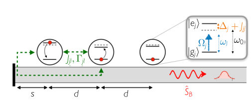
<figcaption class="paper-figure-caption"><b>Fig 1.</b> Figure 1. Array of N two-level emitters coupled to a one- dimensional waveguide terminated by a mirror. The sepa- ration between the first emitter and the mirror is s, while the distance between emitters is d. The photonic modes of the waveguide induce a coherent Jjl and dissipative Γjl inter- action between emitters j and l, which can be described as the superposition of the two waves traveling from one emit- ter to the other (green dashed arrows). Photons are emitted by the array via action of the bright jump operator ˆSB with decay rate ΓB. Additionally, each individual emitter can be detuned from its bare transition frequency by an amount ∆j and driven at frequency ωl at a Rabi...</figcaption>
</figure>
<figure class="paper-figure-card">
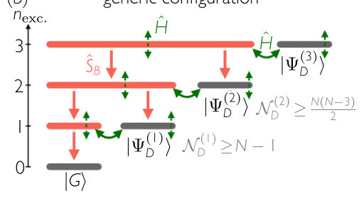
<figcaption class="paper-figure-caption"><b>Fig 2.</b> Figure 2. Lindbladian spectrum or eigenstates of the dis- sipative Hamiltonian for (a) the permutationally symmetric configuration (d = mλ0/2 with m ∈N) and (b) any other general configuration, for the four lowest excitation numbers nexc. In (a), decay (red arrows) only occurs within each lad- der with well-defined total angular momentum L. The coher- ent Hamiltonian ˆH gives rise to energy shifts of each state (green dashed double arrows). The end of each ladder corre- sponds to a set of N (nexc) D Lindbladian dark states, |ψ(nexc) D ⟩, colored in grey. (b) For general configurations d ̸= mλ0/2, photon emission does not conserve the total angular momen- tum of the system. Additionally, the...</figcaption>
</figure>
<figure class="paper-figure-card">
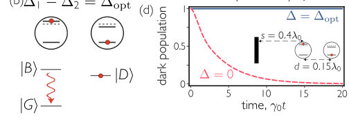
<figcaption class="paper-figure-caption"><b>Fig 3.</b> Figure 3. (a) For two emitters at a distance d ̸= mλ0/2 and in the absence of a relative detuning (∆1 −∆2 = 0), the bright |B⟩and dark |D⟩Lindbladian eigenstates are coupled via the coherent interactions ˆH, providing a decay path for |D⟩. (b) Applying the optimal relative detuning ∆1 −∆2 = ∆opt, the coupling is canceled, and |D⟩becomes a total dark state of the full master equation. (c) Optimal detuning ∆opt as a function of the separation s of the first emitter from the mirror and the distance d between emitters. (d) Overlap of the density matrix ˆρ(t) with the dark state |D⟩over time for a two-emitter array with s = λ0/4 and d = 0.15λ0 initialized at |D⟩with (solid blue) optimized...</figcaption>
</figure>
<figure class="paper-figure-card">
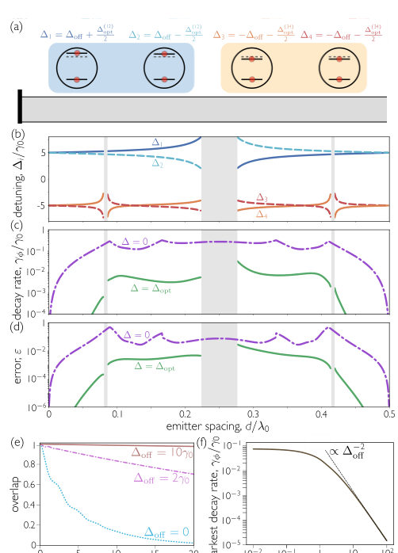
<figcaption class="paper-figure-caption"><b>Fig 4.</b> Figure 4. (a) Separable two-excitation dark state |D12,34⟩= |D12⟩⊗|D34⟩, consisting of the product of two single- excitation dark states: |D12⟩corresponds to the subsystem formed by the first two emitters (shaded blue), and |D34⟩cor- responds to the subsystem comprised of the third and fourth emitters. A relative detuning ±∆off is applied to the subsys- tems on top of the stabilizing detuning ∆opt. (b) Optimal detuning ∆j of each emitter j as a function of d for s = λ0/4 with ∆off = 5γ0. (c) Decay rate γϕ of the darkest two- excitation eigenstate, |ϕD⟩, of ˆHnH for zero (dot-dashed pur- ple curve) and optimal (green curve) detuning. (d) One mi- nus overlap of the separable two-excitation...</figcaption>
</figure>
<figure class="paper-figure-card">
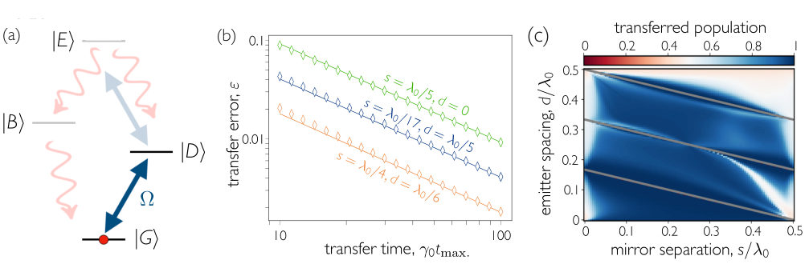
<figcaption class="paper-figure-caption"><b>Fig 5.</b> Figure 5. (a) Collective states of a two-emitter system at the optimal detuning given in Eq. (15). For weak resonant drive on the |G⟩↔|D⟩transition, the bright states can be adiabatically eliminated due to the Zeno effect and the dipole-induced photon blockade, leading to high fidelity Rabi oscillations between |G⟩and |D⟩. (b) Error of the dark state preparation protocol, ϵ = 1 −p(max) D , as a function of the transfer time tmax for two emitters with various configurations s and d. The diamonds and solid lines respectively correspond to the solution of the full master equation and the adiabatic analytical result in Eq. (22). A scaling ϵ ∼t−1 max is observed. (c) Maximum transferred...</figcaption>
</figure>
</div>

<p><strong>Summary.</strong> This paper details the theoretical control of collective quantum states in arrays of emitters coupled to a waveguide. By applying precise frequency shifts, the authors demonstrate how to engineer perfect single-excitation dark states that are immune to decay. This technique is crucial for building robust quantum information storage and networking devices.</p>
<p><strong>Why it may be interesting.</strong> This work directly addresses controlling dissipation in open quantum systems, which is central to quantum memory and quantum networking using solid-state emitters.</p>
<details>
<summary>Detailed structure</summary>
<p><strong>Main problem.</strong> The primary goal is stabilizing perfect single-excitation and near-perfect multi-excitation dark states in arrays of quantum emitters coupled to a waveguide.</p>
<p><strong>Main result.</strong> Optimal frequency shifts allow for the deterministic preparation of single-excitation dark states, and near-perfect multi-excitation dark states can be achieved by treating the system as coupled subsystems.</p>
<p><strong>Method.</strong> The analysis uses the master equation and Hamiltonian diagonalization to find states that decouple from the dissipative environment, requiring precise tuning of emitter detunings.</p>
<p><strong>Model / system.</strong> The system consists of N two-level emitters (qubits) coupled to a one-dimensional photonic waveguide terminated by a mirror. Dynamics are governed by a Lindbladian evolution incorporating coherent and dissipative couplings.</p>
<p><strong>Key observables.</strong> Dark state population ($p_D$), decay rate ($\gamma$), and the error ($\epsilon$) in state preparation.</p>
<p><strong>Important parameters / regimes.</strong> Optimal relative detuning ($\Delta_{opt}$), number of emitters ($N$), and the strength of external driving fields ($\Omega$).</p>
<p><strong>Assumptions / limitations.</strong> The Markov approximation is used, and for some analyses, adiabatic elimination is employed under the assumption that driving fields are weak compared to decay rates.</p>
<p><strong>Figures summary.</strong> Figures illustrate the array setup, the decay paths in the Lindbladian spectrum, and the error ($\epsilon$) in photon emission for two-emitter systems under noise.</p>
<p><strong>Paper structure.</strong> The paper progresses from establishing the general theory of dark states in coupled emitters, detailing the stabilization mechanism for single excitations via detuning, generalizing to multi-excitations, and finally analyzing the robustness of the preparation protocol against noise.</p>
</details>
<details>
<summary>Abstract</summary>
<p>The radiative properties of quantum emitters are profoundly influenced by their electromagnetic environment. When coupled to a waveguide terminated at one end by a mirror, distant emitters interact strongly via virtual photon exchange, leading to collective superradiant and subradiant states with enhanced or suppressed decay rates. We demonstrate that applying optimal frequency shifts to each emitter enables the formation of perfect single-excitation dark states (i.e. states with zero decay rate) and near-perfect multi-excitation dark states in small ensembles. These collective states can be deterministically prepared with high fidelity using classical driving fields or few-photon pulses propagating along the waveguide. These results, readily implementable in superconducting qubit platforms, open new avenues for quantum information storage, networking and control of light.</p>
</details>
<p><sub><a href="#top">↑ back to top</a></sub></p>

<p><a id="paper-2609.03039"></a></p>
<h3 id="nanoscale-magnetometry-via-collective-many-body-dynamics-in-diamond">⭐ <a href="http://arxiv.org/abs/2609.03039v1">Nanoscale magnetometry via collective many-body dynamics in diamond</a></h3>
<p><strong>Highlighted author(s):</strong> Mikhail D. Lukin<br>
<strong>Authors:</strong> Haoyang Gao, Piotr Put, Nathaniel T. Leitao, Nazlı U. Köylüoğlu, Andrew Maccabe, Mathew Mammen, Siddharth Dandavate, Lillian B. Hughes Wyatt, Leigh S. Martin, Ania C. Bleszynski Jayich, Hongkun Park, Mikhail D. Lukin<br>
<strong>Type:</strong> both · <strong>Category:</strong> disordered systems and neural networks · <strong>PDF:</strong> <a href="https://arxiv.org/pdf/2609.03039v1">https://arxiv.org/pdf/2609.03039v1</a><br>
<strong>Analysis basis:</strong> full PDF text, analyzed in chunks
<strong>Topic relevance:</strong> <code>QC/QI experiment</code> <strong>3/5</strong> · <code>analog quantum simulation</code> <strong>3/5</strong> · <code>quantum measurements</code> <strong>2/5</strong> · <code>correlated / nonlocal dissipation</code> <strong>1/5</strong> · <code>driven-dissipative phase transition</code> <strong>1/5</strong></p>
<div class="figure-strip-hint">↔ Scroll figures horizontally</div>
<div class="paper-figures-scroll">
<figure class="paper-figure-card">
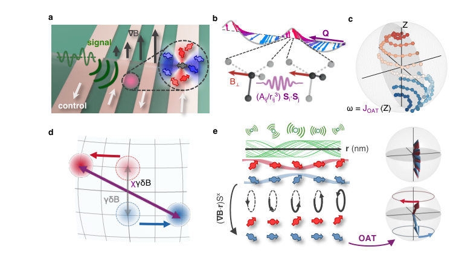
<figcaption class="paper-figure-caption"><b>Fig 1.</b> FIG. 1. Interaction-enhanced quantum sensor based on dipolar interactions. a, Schematic of the experimental system. A diamond hosting a 3D ensemble of interacting NV centers serves as a sensor of external magnetic fields. The diamond is placed on a chip consisting of four par- allel microwires that delivers homogeneous MW control. The same wires are diplexed with pulsed electric currents (white arrows) to generate magnetic-field gradients for the preparation of nanoscale spin spirals. Inset: dipolar interactions among NV centers, with colors indicating the angular-dependent sign of coupling. b, Key ingredients enabling interaction-enhanced sensing. Collective OAT dynamics is engineered from...</figcaption>
</figure>
<figure class="paper-figure-card">
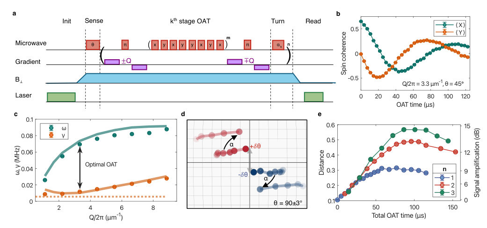
<figcaption class="paper-figure-caption"><b>Fig 2.</b> FIG. 2. Signal amplification through collective many-body dynamics. a, Experimental sequence realizing signal amplification. The spin ensemble is optically polarized at zero magnetic field, after which the perpendicular field B⊥is ramped to 362.4 G to tune the dipolar interaction to the form of Eq. (1). A MW pulse of angle θ = π/2 ± δθ mimics the sensing signal, followed by an OAT stage that amplifies the encoded response. The OAT dynamics are implemented through pulsed control of magnetic-field gradients and MW drive [8]: a conical spin spiral is wound, evolved under a generalized (XY8)m sequence that decouples on-site disorder, and then unwound at the end of the quench. An optional MW...</figcaption>
</figure>
<figure class="paper-figure-card">
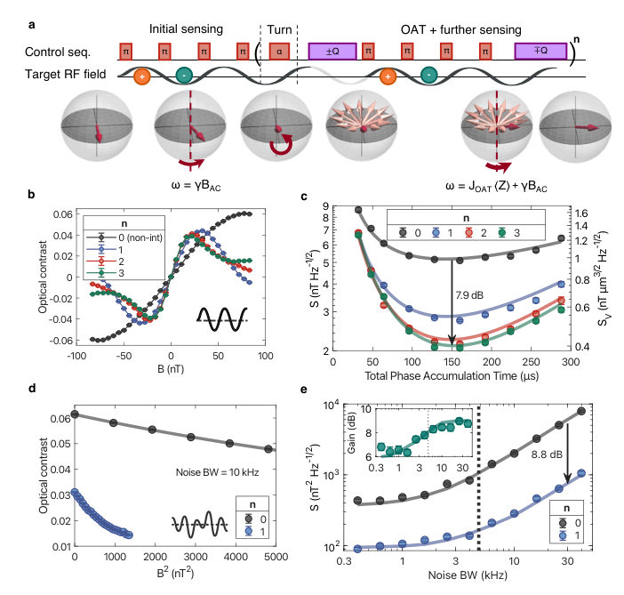
<figcaption class="paper-figure-caption"><b>Fig 3.</b> FIG. 3. Interaction-enhanced sensing of global magnetic signal and noise. a, Experimental protocol for interaction-enhanced sensing of an AC magnetic field. An initial sensing stage consists of a train of π-pulses synchronized to the target radio frequency (RF) signal, acquiring a phase that is subsequently rotated toward the Z axis by a turn pulse α. The resulting Z polarization is then amplified by an OAT stage, during which the disorder-decoupling π-pulses are frequency-synchronized to the target signal and phase-locked to the initial sensing stage, enabling further sensing while amplifying previously accumulated signal. Analogous to Fig. 2a, this stage can be repeated multiple times for...</figcaption>
</figure>
<figure class="paper-figure-card">
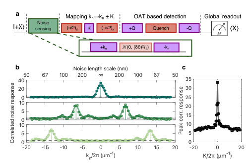
<figcaption class="paper-figure-caption"><b>Fig 4.</b> FIG. 4. Interaction-enabled correlation sensing at nanometer length scales. a, Protocol for interaction-enabled correlation sens- ing, where purple (red) squares represent pulses of magnetic-field gradient (MW drive). The protocol starts with a noise sensing stage which encodes the spatially correlated magnetic-field noise into Sz</figcaption>
</figure>
</div>

<p><strong>Summary.</strong> This work presents a novel approach to nanoscale magnetometry using strongly interacting electron spins in diamond NV centers. By coherently controlling collective many-body dynamics via Overhauser-Antiferromagnetic Tunneling (OAT), the authors achieve significant signal amplification and demonstrate the ability to map spatially correlated magnetic noise down to 50 nm. This opens pathways for advanced quantum sensing in biological and material characterization.</p>
<p><strong>Why it may be interesting.</strong> The use of collective dynamics and engineered spin interactions in a solid-state platform like NV centers provides a concrete, experimentally realized example of how many-body physics can enhance quantum sensing beyond the standard quantum limit.</p>
<details>
<summary>Detailed structure</summary>
<p><strong>Main problem.</strong> The paper addresses the challenge of achieving practical, high-gain nanoscale magnetic sensing by leveraging the collective many-body dynamics of interacting quantum spins.</p>
<p><strong>Main result.</strong> They successfully demonstrate metrological gains up to 8.8 dB for noise sensing and achieve momentum-space-resolved detection of spatially correlated magnetic noise down to 50 nm.</p>
<p><strong>Method.</strong> The core method involves engineering Overhauser-Antiferromagnetic Tunneling (OAT) dynamics using pulsed magnetic field gradients to coherently control and amplify the sensing signal.</p>
<p><strong>Model / system.</strong> The system is a high-density ensemble of Nitrogen-Vacancy (NV) centers in diamond, whose dynamics are governed by magnetic dipole-dipole interactions, modeled via collective spin-wave dynamics.</p>
<p><strong>Key observables.</strong> Metrological gain (dB), spatial resolution (nm), spin polarization dynamics, and the response function $F(\vec{k}_n, \vec{K})$.</p>
<p><strong>Important parameters / regimes.</strong> The sensing gain (e.g., 7.9 dB for signal, 8.8 dB for noise), the minimum detectable length scale (50 nm), and the interaction strength parameter $J_0$.</p>
<p><strong>Assumptions / limitations.</strong> The analysis accounts for experimental overheads, and theoretical derivations rely on mean-field approximations and specific symmetries in the spin-wave model.</p>
<p><strong>Figures summary.</strong> Figures illustrate the experimental setup, the multi-stage signal amplification protocol (OAT), and the theoretical prediction of momentum-space response functions $F(\vec{k}_n, \vec{K})$ showing wavevector selectivity.</p>
<p><strong>Paper structure.</strong> The paper progresses from demonstrating the physical system and the need for interaction enhancement, detailing the OAT protocol for signal amplification, and culminating in a theoretical analysis of the momentum-space response function to characterize spatially correlated noise.</p>
</details>
<details>
<summary>Abstract</summary>
<p>Many-body dynamics constitutes a promising approach for creating correlations between quantum particles which can be used for applications in sensing and metrology. However, utilizing this potential for substantial gains in practical settings is a challenging task with only a very few applications realized to date. Here, we demonstrate an approach to nanoscale magnetic sensing enabled by strongly interacting electronic spins in a room temperature solid. By coherently controlling collective many-body dynamics of a dipolar ensemble of $\sim 10^4$ nitrogen-vacancy (NV) centres in diamond with pulsed magnetic field gradients, we demonstrate practical metrological gain up to $7.9(2)\,\mathrm{dB}$ for magnetic signal detection and $8.8(3)\,\mathrm{dB}$ for magnetic noise sensing, fully accounting for experimental overheads. Finally, we combine these methods to demonstrate a momentum-space-resolved sensing modality that enables detection of spatially correlated magnetic noise at continuously tunable length scales down to 50 nanometers. These observations open the door toward practical applications of interaction-enhanced quantum sensors for nanoscale biological imaging and material characterization.</p>
</details>
<p><sub><a href="#top">↑ back to top</a></sub></p>

<p><a id="paper-2609.03491"></a></p>
<h3 id="weakly-driven-and-finite-detuning-boundary-time-crystals-enabled-by-low-dissipation-dynamical-channels"><a href="http://arxiv.org/abs/2609.03491v1">Weakly Driven and Finite Detuning Boundary Time Crystals Enabled by Low-Dissipation Dynamical Channels</a></h3>
<p><strong>Authors:</strong> Xiang Guo, Xiaojun Zhang, Zhihai Wang<br>
<strong>Type:</strong> theory · <strong>Category:</strong> other · <strong>PDF:</strong> <a href="https://arxiv.org/pdf/2609.03491v1">https://arxiv.org/pdf/2609.03491v1</a><br>
<strong>Analysis basis:</strong> full PDF text, analyzed in chunks
<strong>Topic relevance:</strong> 🔥 <code>driven-dissipative phase transition</code> <strong>4/5</strong> · <code>analog quantum simulation</code> <strong>3/5</strong> · <code>correlated / nonlocal dissipation</code> <strong>3/5</strong> · <code>methods for driven-dissipative</code> <strong>3/5</strong> · <code>Keldysh / 2PI / non-Gaussian methods</code> <strong>2/5</strong> · <code>Tavis-Cummings &amp; cavity-many-emitter</code> <strong>2/5</strong> · <code>non-equilibrium universality</code> <strong>2/5</strong></p>
<div class="figure-strip-hint">↔ Scroll figures horizontally</div>
<div class="paper-figures-scroll">
<figure class="paper-figure-card">
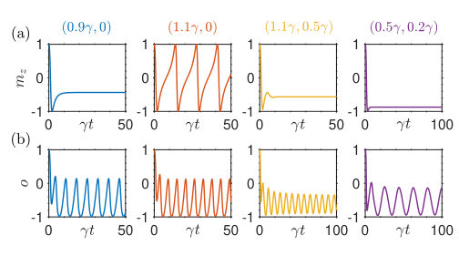
<figcaption class="paper-figure-caption"><b>Fig 1.</b> Figure 1. (a) and (b) The mean-field evolution of the order parameter under different (η, ∆) for α = 0 and α = 1, respec- tively. The initial state is set as mx,y = 0, mz = 1 in panel (a) and m(1,2) x,y = 0, m(1,2) z = 1 in panel (b).</figcaption>
</figure>
<figure class="paper-figure-card">
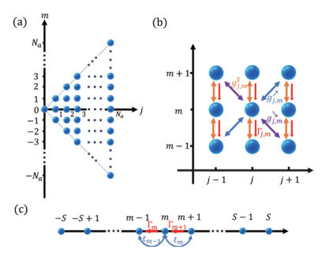
<figcaption class="paper-figure-caption"><b>Fig 2.</b> Figure 2. Effective lattice picture of the system. (a) Tri- angular lattice for α = 1, where each lattice site represents a basis state |ϕj,m⟩. (b) Local interaction structure around an arbitrary bulk site |ϕj,m⟩of the triangular lattice. The double-headed arrows denote the three types of coherent in- tersite couplings, characterized by g∥ j,m, gր j,m, and gց j,m, while the red arrows indicate the dissipative transitions with rate Γj,m. (c) One-dimensional lattice picture for α = 0, with coherent nearest-neighbor couplings tm and cascaded dissipa- tive transitions at rates Γm.</figcaption>
</figure>
<figure class="paper-figure-card">
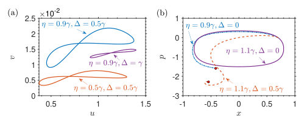
<figcaption class="paper-figure-caption"><b>Fig 3.</b> Figure 3. (a) The semiclassical phase space limit cycles pro- jected onto the (a) u-v and (b) x-p plane for α = 1 and α = 0, respectively. The red circles in (b) mark the fixed points ap- proached after long-time evolution under parameters outside the BTC phase. All curves in panel (b) adopt the identical initial condition x(0) = 0.7, p(0) = 0.</figcaption>
</figure>
<figure class="paper-figure-card">
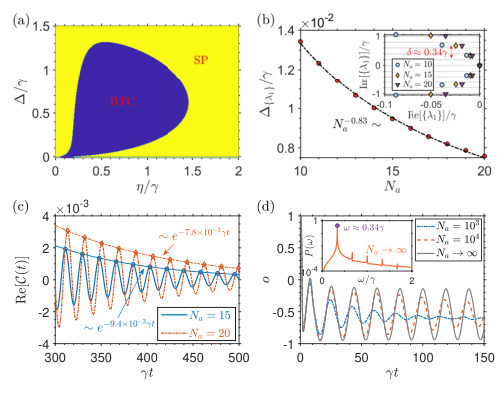
<figcaption class="paper-figure-caption"><b>Fig 4.</b> Figure 4. (a) Mean-field phase diagram in the η−∆plane. (b) Energy gap of the first eigenvalue branch as a function of Na with power-law fitting. Inset of (b): First eigenvalue branches in the low-lying Liouvillian spectrum for Na = 10, 15, 20. (c) Long-time dynamics of real part of the two-time correlation function C(t) for Na = 15 and 20. (d) Dynamics of the or- der parameter o against system size. Inset of (d): Fourier spectrum of o in the thermodynamic limit. In (d), 5000 stochastic trajectories are adopted in the TWA simulation for Na = 103 and Na = 104 and the initial state is set as m(1,2) x,y = 0, m(1,2) z = 1. For panels (b), (c) and (d), we set ∆= 0.2γ and η = 0.5γ.</figcaption>
</figure>
</div>

<p><strong>Summary.</strong> This paper shows that Boundary Time Crystals (BTCs) can be robustly realized in coupled atomic ensembles even when the driving is weak and the system is detuned from resonance. This is achieved by exploiting how shared dissipation organizes the system's dynamics into low-dissipation channels. The theoretical analysis uses semiclassical and spectral methods, demonstrating the feasibility of these exotic quantum states in physical platforms like waveguide-QED.</p>
<p><strong>Why it may be interesting.</strong> This work provides a powerful theoretical framework for realizing non-equilibrium quantum phenomena like BTCs using realistic, weakly driven, and detuned systems, which is highly relevant for quantum optics and open quantum systems research.</p>
<details>
<summary>Detailed structure</summary>
<p><strong>Main problem.</strong> The research aims to establish conditions for robust Boundary Time Crystals (BTCs) in driven-dissipative systems, overcoming the strict requirements of strong driving and exact resonance found in conventional models.</p>
<p><strong>Main result.</strong> The authors demonstrate that coupling two atomic ensembles allows BTCs to persist under weak driving and finite detuning by organizing dissipation into dynamically accessible low-dissipation channels.</p>
<p><strong>Method.</strong> The analysis employs mean-field approximations, semiclassical WKB methods, and the study of the Liouvillian spectrum to track the system's dynamics in the thermodynamic limit.</p>
<p><strong>Model / system.</strong> The system consists of two atomic ensembles (spin-1/2 particles) coupled to a common Markovian reservoir, modeled by a master equation. The dynamics are analyzed on an effective lattice structure, which is later mapped to a waveguide-QED platform.</p>
<p><strong>Key observables.</strong> Order parameters ($m_z$, $o$), the two-time correlation function $ ext{Re}[C(t)]$, and the low-lying Liouvillian spectrum.</p>
<p><strong>Important parameters / regimes.</strong> Driving strength ($\eta$), detuning ($\Delta$), dissipation rate ($\gamma$), and the system size ($N_a$ or $S$).</p>
<p><strong>Assumptions / limitations.</strong> The analysis relies on the Born–Markov approximation and the mean-field approximation, which are valid in the thermodynamic limit ($N_a 	o \infty$).</p>
<p><strong>Figures summary.</strong> Figures illustrate mean-field evolution of order parameters under varying driving/detuning, semiclassical phase space limit cycles, and the low-lying Liouvillian spectrum showing spectral gaps.</p>
<p><strong>Paper structure.</strong> The paper progresses from analyzing the single-ensemble case to the two-ensemble model, deriving semiclassical equations of motion, and finally confirming the results using the full Liouvillian spectrum analysis and mapping the model to a waveguide-QED setup.</p>
</details>
<details>
<summary>Abstract</summary>
<p>Spontaneous breaking of continuous time-translation symmetry in driven-dissipative systems gives rise to boundary time crystals (BTCs), characterized by persistent oscillations sustained by coherent driving and collective dissipation. Conventional BTCs, however, typically require strong driving and exact atom-drive resonance, imposing stringent constraints on their realization. Here we consider two atomic ensembles coupled to a common Markovian reservoir and show that shared dissipation organizes dissipation-free and low-dissipation modes into dynamically accessible low-dissipation channels, enabling BTCs under weak driving and finite detuning. Finite detuning further selects a unique stable limit cycle from an initial-state-dependent family of oscillatory trajectories. Our results establish low-dissipation dynamical channels as a route to robust BTCs under relaxed driving and resonance conditions.</p>
</details>
<p><sub><a href="#top">↑ back to top</a></sub></p>

<p><a id="paper-2609.04117"></a></p>
<h3 id="non-abelian-string-melting-and-thermalization-in-an-open-lattice-gauge-theory"><a href="http://arxiv.org/abs/2609.04117v1">Non-Abelian string melting and thermalization in an open lattice gauge theory</a></h3>
<p><strong>Authors:</strong> Erick Parra Verde, Giovanni Cataldi, Stefan Kühn, Giuseppe Magnifico, Jad C. Halimeh<br>
<strong>Type:</strong> theory · <strong>Category:</strong> statistical mechanics · <strong>PDF:</strong> <a href="https://arxiv.org/pdf/2609.04117v1">https://arxiv.org/pdf/2609.04117v1</a><br>
<strong>Analysis basis:</strong> full PDF text, analyzed in chunks
<strong>Topic relevance:</strong> 🔥 <code>methods for driven-dissipative</code> <strong>4/5</strong> · <code>driven-dissipative phase transition</code> <strong>3/5</strong> · <code>non-equilibrium universality</code> <strong>3/5</strong> · <code>Keldysh / 2PI / non-Gaussian methods</code> <strong>2/5</strong> · <code>quantum measurements</code> <strong>2/5</strong> · <code>scars &amp; prethermalization</code> <strong>2/5</strong> · <code>analog quantum simulation</code> <strong>1/5</strong> · <code>correlated / nonlocal dissipation</code> <strong>1/5</strong></p>
<div class="figure-strip-hint">↔ Scroll figures horizontally</div>
<div class="paper-figures-scroll">
<figure class="paper-figure-card">
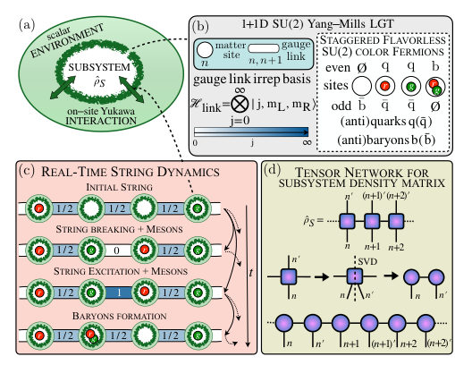
<figcaption class="paper-figure-caption"><b>Fig 1.</b> FIG. 1. Open-system dynamics of SU(2) LGT. (a) A 1 + 1D SU(2) Yang–Mills LGT interacts as a subsystem (S) through an (on-site) Yukawa potential with an external (green) environment (E) at constant temperature T described by a scalar field theory; (b) The subsystem considers stag- gered flavorless fermionic matter on lattice sites coupled with SU(2) gauge link fields living in an infinite Hilbert space made out of the sum of SU(2) irreducible representations. (c) The real-time subsystem dynamics focuses on string dynamics, in- cluding string breaking, string excitation, matter (baryons and mesons) production, and other processes (continuous and dashed arrows). (d) Simulations are performed...</figcaption>
</figure>
<figure class="paper-figure-card">
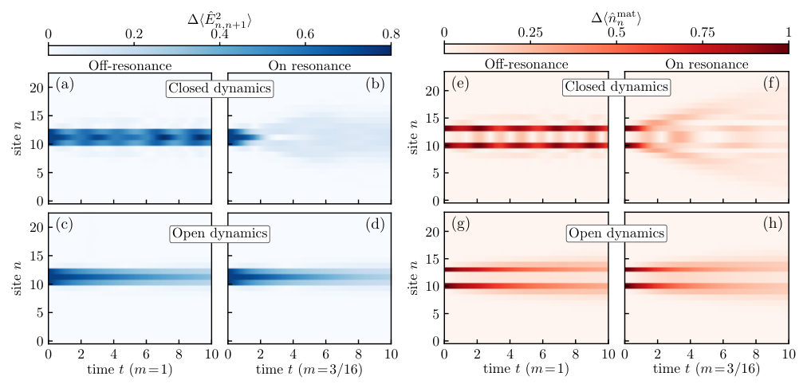
<figcaption class="paper-figure-caption"><b>Fig 2.</b> FIG. 2. Chromoelectric string open and closed dynamics. (a-d) Link-resolved excess chromoelectric energy ∆⟨ˆE2 n,n+1(t)⟩ and (e-h) staggered matter density ∆⟨ˆnmat n (t)⟩in Eq. (12) during the real-time evolution of an initial quark–antiquark string placed at the center of the chain. The top row (a,b,e,f) shows closed-system unitary dynamics, while the bottom row (c,d,g,h) shows open-system Lindblad dynamics coupled to a thermal environment. (a,c,e,g) Off-resonant dynamics at m=1, where the isolated string does not coherently break. (b,d,f,h) Resonant dynamics, at m=3/16, where the isolated dynamics favors string breaking into two mesons. In the open case, the environment melts the string...</figcaption>
</figure>
<figure class="paper-figure-card">
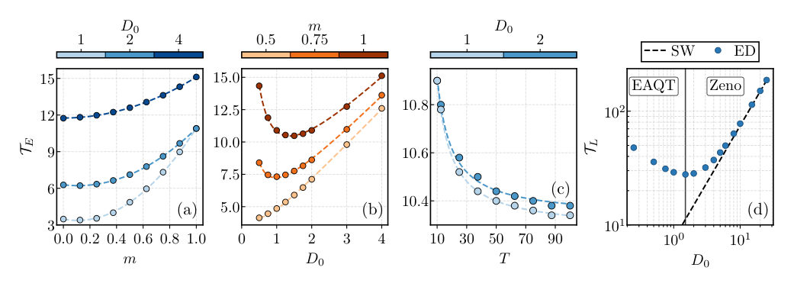
<figcaption class="paper-figure-caption"><b>Fig 3.</b> FIG. 3. Thermalization times and Schrieffer–Wolff prediction. Empirical thermalization time TE extracted from TN simulations as a function of (a) the fermion mass m, (b) the environment self-correlation D0, and (c) the temperature T. Dashed lines fit the functional forms discussed in Sec. IV B. Color bars indicate the parameter varied across curves: D0 in panels (a,c) and m in panel (b). Panel (d) shows the Liouvillian thermalization time TL obtained by ED (i.e. by an Arnoldi iteration method) as a function of D0, compared with the Schrieffer–Wolff (SW) prediction of Eq. (26) appearing as a black dashed line. The solid vertical line marks the minimum of TL and the transition from an...</figcaption>
</figure>
<figure class="paper-figure-card">
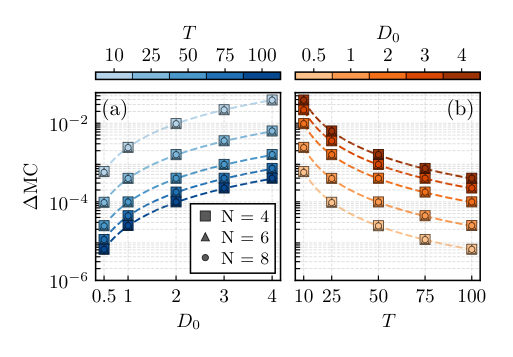
<figcaption class="paper-figure-caption"><b>Fig 4.</b> FIG. 4. Environment imprint on matter composition. Matter-composition imbalance ∆MC, defined in Eq. (29), be- tween the Lindblad steady state and the subsystem Gibbs en- semble. (a) Scaling of ∆MC as a function of the environment self-correlation D0 for different bath temperatures T; (b) the same quantity as a function of T for different D0. Color bars encode the parameter varied across curves: T in panel (a) and D0 in panel (b). Marker shape and marker size distinguish ED calculations for system sizes N = 4, 6, 8, with smaller markers corresponding to larger N. Dashed curves correspond to the fitting function ∆MC=a(D0/T)2 with a≈0.243.</figcaption>
</figure>
<figure class="paper-figure-card">
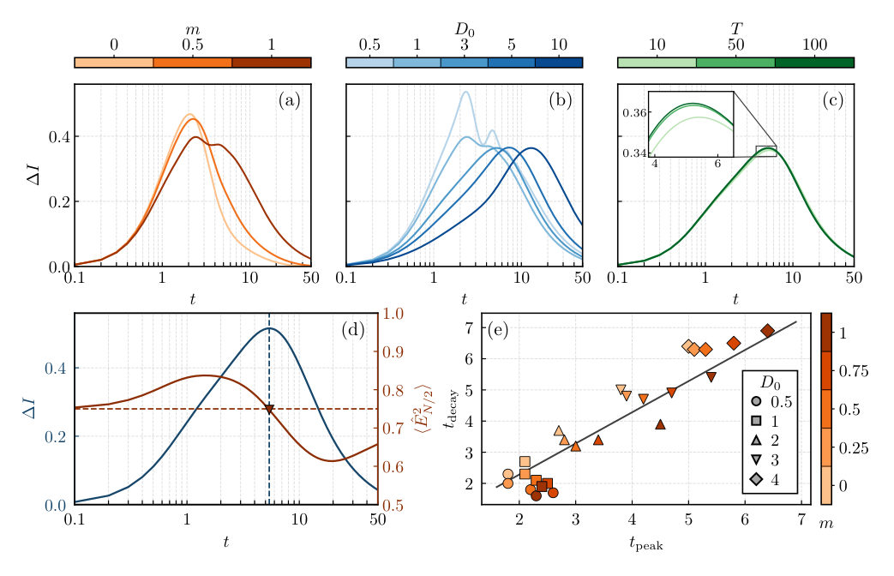
<figcaption class="paper-figure-caption"><b>Fig 5.</b> FIG. 5. Mutual-information dynamics and correlation times. Subtracted mutual information ∆I(t), defined in Eq. (30), between the two halves of the string. Panels (a-c) show ∆I(t) for different values of (a) the mass coupling m, (b) the environment self-correlation D0, and (c) the temperature T, with the corresponding values encoded by the color bars. Panel (d) compares ∆I(t) with the quadratic Casimir of the central link, ⟨ˆE2 N/2−1,N/2⟩, for a representative simulation with (m, D0, T)=(1, 3, 10); the dashed vertical line marks the mutual-information peak time tpeak and the time tdecay at which the central-link Casimir falls below its initial string value, itself marked with a dashed...</figcaption>
</figure>
</div>

<p><strong>Summary.</strong> This work develops a gauge-preserving framework to study thermalization and string dynamics in open non-Abelian lattice gauge theories. By coupling the SU(2) LGT to a thermal environment, the authors find that dissipation causes string melting and that the thermalization time depends non-monotonically on the coupling strength. These results establish a key theoretical understanding of non-Abelian plasma dynamics.</p>
<p><strong>Why it may be interesting.</strong> It provides a concrete, non-Abelian example of open quantum system dynamics, bridging concepts from quantum information (open systems) with high-energy physics (QCD/LGTs).</p>
<details>
<summary>Detailed structure</summary>
<p><strong>Main problem.</strong> The paper investigates how the non-Abelian gauge structure modifies dissipative, real-time dynamics in open lattice gauge theories.</p>
<p><strong>Main result.</strong> The thermalization time exhibits non-monotonic behavior with environment coupling, and the non-Abelian structure yields a mesonic bias in the steady state, contrasting with Abelian models.</p>
<p><strong>Method.</strong> The dynamics are solved using tensor networks applied to a Lindblad master equation derived in the Quantum Brownian Motion limit.</p>
<p><strong>Model / system.</strong> The system is a 1+1D SU(2) Yang-Mills Lattice Gauge Theory coupled to dynamical matter and an external thermal scalar environment via a gauge-preserving Lindblad evolution.</p>
<p><strong>Key observables.</strong> String melting, thermalization time, mesonic bias, and chromoelectric flux screening.</p>
<p><strong>Important parameters / regimes.</strong> Environment coupling strength, temperature, and the specific non-Abelian gauge group SU(2).</p>
<p><strong>Assumptions / limitations.</strong> The environment is treated via a Lindblad evolution, and the analysis assumes the QBM limit and a color-singlet coupling to maintain gauge invariance.</p>
<p><strong>Figures summary.</strong> Figure 1 illustrates the open-system dynamics, showing the interaction between the SU(2) LGT subsystem and the thermal environment, and detailing the use of Tensor Network methods for simulation.</p>
<p><strong>Paper structure.</strong> The paper introduces the model (subsystem, environment, interaction), derives the Lindblad master equation in the QBM limit, and then presents results concerning string melting, thermalization times, and matter composition.</p>
</details>
<details>
<summary>Abstract</summary>
<p>Open-system lattice gauge theory (LGT) has so far been developed predominantly in Abelian settings, leaving open how genuinely non-Abelian gauge structure reshapes dissipative real-time dynamics. Here, we study a $1+1$D SU(2) Yang--Mills LGT with dynamical matter coupled to a thermal scalar environment through a gauge-preserving Lindblad evolution, which we solve using tensor networks. Starting from a quark--antiquark pair connected by a chromoelectric flux string, we find that the thermal medium melts the string by delocalizing the color charges and screening the flux; on resonance, this dissipative melting competes with and delays coherent string breaking. The thermalization time is non-monotonic in the environment coupling, decreasing through environment-assisted transport at weak dissipation before increasing in a quantum-Zeno regime. In the strong-dephasing limit, a Schrieffer--Wolff expansion maps the dynamics to a classical exclusion process and yields the Liouvillian thermalization time analytically. Beyond these generic open-system effects, the non-Abelian matter structure produces a systematic mesonic bias in the steady state, while the thermalization time decreases with temperature, in contrast to the Abelian Schwinger model trend and in qualitative agreement with pNRQCD studies of the quark--gluon plasma. These results establish a gauge-preserving framework for thermalization and string dynamics in open non-Abelian lattice gauge theories.</p>
</details>
<p><sub><a href="#top">↑ back to top</a></sub></p>

<p><a id="paper-2609.04037"></a></p>
<h3 id="discrete-time-crystals-in-disordered-anisotropic-heisenberg-chains"><a href="http://arxiv.org/abs/2609.04037v1">Discrete time crystals in disordered anisotropic Heisenberg chains</a></h3>
<p><strong>Authors:</strong> Francesco Formicola, Grazia Di Bello, Antonio De Candia, Giulio De Filippis, Carmine Antonio Perroni<br>
<strong>Type:</strong> theory · <strong>Category:</strong> disordered systems and neural networks · <strong>PDF:</strong> <a href="https://arxiv.org/pdf/2609.04037v1">https://arxiv.org/pdf/2609.04037v1</a><br>
<strong>Analysis basis:</strong> full PDF text, analyzed in chunks
<strong>Topic relevance:</strong> 🔥 <code>driven-dissipative phase transition</code> <strong>4/5</strong> · 🔥 <code>methods for driven-dissipative</code> <strong>4/5</strong> · <code>analog quantum simulation</code> <strong>3/5</strong> · <code>non-equilibrium universality</code> <strong>3/5</strong> · <code>scars &amp; prethermalization</code> <strong>3/5</strong></p>
<div class="figure-strip-hint">↔ Scroll figures horizontally</div>
<div class="paper-figures-scroll">
<figure class="paper-figure-card">
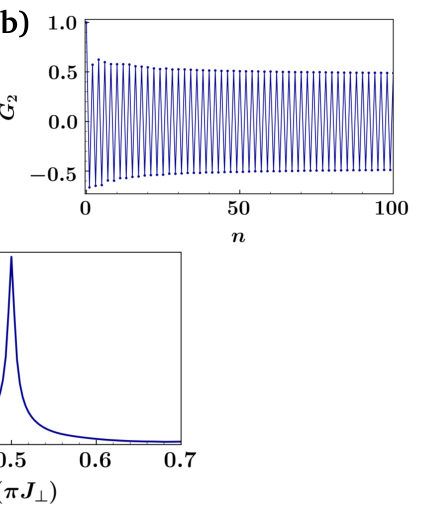
<figcaption class="paper-figure-caption"><b>Fig 1.</b> Figure 1: Two-time imbalance correlation function G2(0, t) as a function of time (a), two-time imbalance correlation function G2(0, nT) as a function of the number n of Floquet cycles (b) and the spectral analysis of the continuous time signal G2(0, t) (c). Results are obtained by averaging over R = 5·103 independent disorder realizations, interaction strength Jz/J⊥= 1, disorder strength W/J⊥= 10, rotation-angle error ε = 0 with chain length N = 12 and period T = 2/J⊥.</figcaption>
</figure>
<figure class="paper-figure-card">
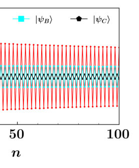
<figcaption class="paper-figure-caption"><b>Fig 2.</b> Figure 2: Two-time imbalance correlation function G2(0, nT) as a function of the number n of Floquet cycles for three different initial states: the Néel state |ψ〉N (red circles), the entangled state |ψ〉B (cyan squares) defined in Eq. (9), and the product state |ψ〉C defined in Eq. (8) (black pentagons). Results are obtained by averaging over R = 5 · 103 independent disorder realizations, interaction strength Jz/J⊥= 1, disorder strength W/J⊥= 10, rotation-angle error ε = 0, with chain length N = 8 and period T = 2/J⊥.</figcaption>
</figure>
<figure class="paper-figure-card">
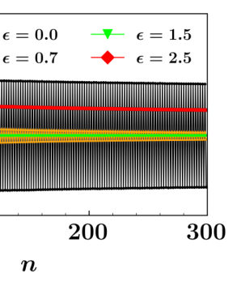
<figcaption class="paper-figure-caption"><b>Fig 3.</b> Figure 3: Two-time imbalance correlation function G2(0, nT) as a function of the number n of Floquet cycles for different values of the rotation-angle error: ε = 0.0 (black circles), ε = 0.7 (orange upward triangles), ε = 1.5 (cyan downward trian- gles) and ε = 2.5 (lime diamonds). Results are obtained by averaging over R = 5·103</figcaption>
</figure>
<figure class="paper-figure-card">
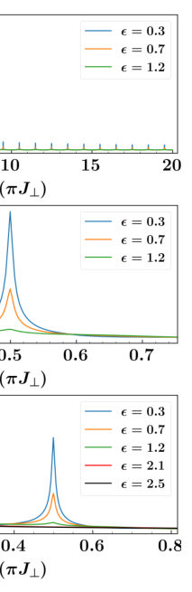
<figcaption class="paper-figure-caption"><b>Fig 4.</b> Figure 4: (a) Frequency spectrum of the continuous signal G2(0, t) as a function of dimensionless frequencies for different values of the rotation-angle errors: ε = 0.3 (blue), ε = 0.7 (orange), ε = 1.2 (green). (b) Magnification of the spectrum around the fundamental subharmonic peak at ωDTC = π/T. (c) Magnification of the low- frequency region around ω = 0, presenting also the cases ε = {1.7, 2.1, 2.5}. Results are obtained by averaging over R = 5·103 independent disorder realizations, disorder strength W/J⊥= 10, with chain length N = 12 and period T = 2/J⊥.</figcaption>
</figure>
<figure class="paper-figure-card">
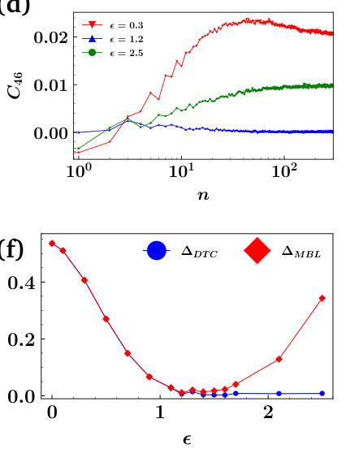
<figcaption class="paper-figure-caption"><b>Fig 5.</b> Figure 5: (a) Entanglement entropy Sent(nT) as a function of time for rotation-angle errors ε ∈[0.0,2.5], for chain length N = 12. The dotted horizontal line is the maximum entropy value allowed by the chosen bipartition for the finite chain. (b) uniform-magnetization QFI per spin FQ(nT), (c) Connected nearest-neighbor correla- tion function C56(nT) and (d) connected next-nearest-neighbor correlation function C46(nT) for various rotation-angle errors ε in the three different regimes: ε = 0.3 (red downward triangles), ε = 1.2 (blue upward triangles), and ε = 2.5 (green circles), with chain length N = 11. (e) Operational lower bound Eex(nT) on the restricted-control ergotropy, obtained from...</figcaption>
</figure>
</div>

<p><strong>Summary.</strong> This research explores discrete time-crystalline phases in disordered Heisenberg spin chains driven periodically. Using advanced MPS simulations, the authors confirm the DTC signature but show that increasing the driving error suppresses this phase. The study maps out an intermediate dynamical regime characterized by localization signatures, providing a detailed diagnostic toolkit for non-equilibrium quantum matter.</p>
<p><strong>Why it may be interesting.</strong> This work directly addresses non-equilibrium quantum phases (time crystals) in the presence of disorder, bridging concepts from many-body localization, Floquet engineering, and quantum criticality, which are highly relevant to modern AMO and condensed matter research.</p>
<details>
<summary>Detailed structure</summary>
<p><strong>Main problem.</strong> The paper investigates the existence and stability of discrete time-crystalline (DTC) behavior in strongly disordered anisotropic Heisenberg spin chains subjected to periodic driving.</p>
<p><strong>Main result.</strong> DTC behavior is observed at zero driving error, characterized by period-doubled oscillations, but this response is suppressed by increasing the rotation error, leading to a regime reminiscent of Anderson localization.</p>
<p><strong>Method.</strong> The study employs extensive numerical simulations using Matrix Product States (MPS) and Matrix Product Operators (MPO) to analyze time evolution.</p>
<p><strong>Model / system.</strong> The system is a one-dimensional disordered spin-1/2 XXZ Heisenberg chain driven by global $\pi$-kicks. The Hamiltonian includes nearest-neighbor interactions and random on-site fields.</p>
<p><strong>Key observables.</strong> Two-time imbalance correlation function ($G_2(0, t)$), Entanglement entropy, Quantum Fisher information, and Restricted-control ergotropy.</p>
<p><strong>Important parameters / regimes.</strong> The rotation-angle error ($\epsilon$), disorder strength ($W$), and the ratio of interaction couplings ($J_z/J_{\perp}$).</p>
<p><strong>Assumptions / limitations.</strong> The analysis assumes the system can be accurately described using MPS techniques and the two-site time-dependent variational principle (2TDVP).</p>
<p><strong>Figures summary.</strong> Figures illustrate the time evolution of the imbalance correlation function $G_2(0, t)$ and its dependence on the driving cycle $n$, comparing DTC signatures against localization signatures across varying error parameters.</p>
<p><strong>Paper structure.</strong> The paper builds from the theoretical framework of spontaneous symmetry breaking in Floquet systems to numerical simulations on the disordered spin chain, analyzing the robustness of the DTC phase against controlled errors and comparing diagnostics across different physical regimes.</p>
</details>
<details>
<summary>Abstract</summary>
<p>A discrete time crystal is an out-of-equilibrium phase of matter characterized by the spontaneous breaking of discrete time-translation symmetry. Using extensive numerical simulations based on matrix-product-state methods, we provide evidence for discrete time-crystalline behavior in strongly disordered spin chains with Heisenberg interactions, including the isotropic point, subject to periodic driving. Starting from a many-body localized regime, we observe that rotations induced by delta kicks produce a pronounced subharmonic response at half the drive frequency in spin observables. We investigate the stability of this response against rotation-angle errors through entanglement entropy, quantum Fisher information, short-range spin correlations, and restricted-control ergotropy. Increasing the rotation error reveals an intermediate dynamical regime separating the time-crystalline and Floquet-localized responses. In this regime, most observables exhibit signatures of weakly correlated dynamics reminiscent of Anderson localization.</p>
</details>
<p><sub><a href="#top">↑ back to top</a></sub></p>

<p><a id="paper-2609.04091"></a></p>
<h3 id="effective-hamiltonian-description-on-monitored-majorana-chains-correlated-power-law-hoppings-and-unconventional-entanglement-scaling"><a href="http://arxiv.org/abs/2609.04091v1">Effective Hamiltonian description on monitored Majorana chains: correlated power-law hoppings and unconventional entanglement scaling</a></h3>
<p><strong>Authors:</strong> Ken Mochizuki, Hisanori Oshima, Ryusuke Hamazaki, Yohei Fuji<br>
<strong>Type:</strong> theory · <strong>Category:</strong> disordered systems and neural networks · <strong>PDF:</strong> <a href="https://arxiv.org/pdf/2609.04091v1">https://arxiv.org/pdf/2609.04091v1</a><br>
<strong>Analysis basis:</strong> full PDF text, analyzed in chunks
<strong>Topic relevance:</strong> 🔥 <code>quantum measurements</code> <strong>4/5</strong> · <code>correlated / nonlocal dissipation</code> <strong>3/5</strong> · <code>methods for driven-dissipative</code> <strong>3/5</strong> · <code>driven-dissipative phase transition</code> <strong>2/5</strong> · <code>non-equilibrium universality</code> <strong>2/5</strong> · <code>Keldysh / 2PI / non-Gaussian methods</code> <strong>1/5</strong> · <code>analog quantum simulation</code> <strong>1/5</strong></p>
<div class="figure-strip-hint">↔ Scroll figures horizontally</div>
<div class="paper-figures-scroll">
<figure class="paper-figure-card">
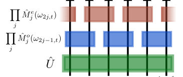
<figcaption class="paper-figure-caption"><b>Fig 1.</b> FIG. 1. The schematic picture of the monitored Majorana circuit. The red and blue rectangles correspond to Majorana parity measurements on even and odd bonds, respectively. The green rectangle represents the unitary dynamics by ˆU.</figcaption>
</figure>
<figure class="paper-figure-card">
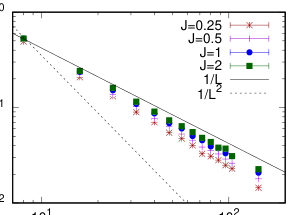
<figcaption class="paper-figure-caption"><b>Fig 2.</b> FIG. 2. The spectral gaps of the effective Hamiltonians for the monitored Majorana circuits in various system sizes, with µo = µe = 0.5. Green squares, blue circles, purple crosses, and red asterisks correspond to J = 2, 1, 0.5, and 0.25, re- spectively. The black solid and dashed lines are proportional to 1/L and 1/L2, respectively.</figcaption>
</figure>
<figure class="paper-figure-card">
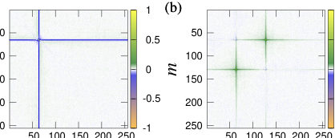
<figcaption class="paper-figure-caption"><b>Fig 3.</b> FIG. 4. The Pearson correlation coefficients between the hop- ping magnitudes of effective Hamiltonians, CK kℓ,mn in Eq. (16), with L = 128. The bond specified by k and ℓis fixed as k = L/2, ℓ= L/2 + 1 in (a) and k = L/2, ℓ= L in (b).</figcaption>
</figure>
<figure class="paper-figure-card">
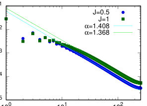
<figcaption class="paper-figure-caption"><b>Fig 4.</b> FIG. 3. The average of the magnitudes of the effective Hamiltonians for various distances, Kmn in Eq. (14), with µe = µo = 0.5. Green rectangles and blue circles correspond to J = 1 and J = 0.5, respectively. Solid lines depict the algebraic decay eβ/dα mn. The parameters obtained from the least squares method are α = 1.368, β = 2.513 (green) and α = 1.408, β = 2.812 (blue). The system size is L = 256, and the fitting is carried out in the range 20 ≤dmn ≤190. The deviation from the algebraic decay for large dmn is attributed to finite-size effects.</figcaption>
</figure>
<figure class="paper-figure-card">
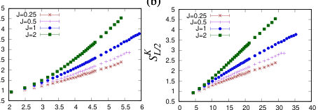
<figcaption class="paper-figure-caption"><b>Fig 5.</b> FIG. 5. The half-chain entanglement entropy of ground states of ˆK(ωt) with µe = µo = 0.5 and b = 1. Green rectangles, blue circles, purple crosses, and red asterisks correspond to J = 2, 1, 0.5, and 0.25, respectively.</figcaption>
</figure>
</div>

<p><strong>Summary.</strong> This work analyzes the effective Hamiltonian for a monitored Majorana chain, revealing that the dynamics lead to long-range hoppings with non-trivial correlations. The key finding is that these correlations are responsible for an enhanced, $[\ln(L)]^2$ scaling of the entanglement entropy, a signature rarely seen in conventional isolated quantum systems.</p>
<p><strong>Why it may be interesting.</strong> It provides a concrete example of how non-trivial correlations in the effective Hamiltonian, arising from measurement processes, can fundamentally alter entanglement scaling beyond what is predicted by standard uncorrelated disorder models.</p>
<details>
<summary>Detailed structure</summary>
<p><strong>Main problem.</strong> The paper investigates the effective Hamiltonians governing the monitored dynamics of a 1D Majorana chain, focusing on unconventional entanglement scaling in the gapless phase.</p>
<p><strong>Main result.</strong> The entanglement entropy scales as $[\ln(L)]^2$ when non-trivial correlations are present in the long-range hopping hoppings, contrasting with the $\ln(L)$ scaling found when these correlations are absent.</p>
<p><strong>Method.</strong> The analysis employs Lyapunov spectral analysis to derive the effective Hamiltonian from measurement-induced dynamics, followed by constructing correlated random power-law hopping models for comparison.</p>
<p><strong>Model / system.</strong> The system is a one-dimensional Majorana chain undergoing alternating unitary evolution and parity measurements. The dynamics are captured by an effective Hamiltonian derived via Lyapunov spectral analysis.</p>
<p><strong>Key observables.</strong> Spectral gap closing ($    ext{faster than } 1/L   ext{ but slower than } 1/L^2$) and entanglement entropy scaling ($[\ln(L)]^2$ vs. $\ln(L)$).</p>
<p><strong>Important parameters / regimes.</strong> System size $L$, measurement frequency $\omega_t$, and the strength of hopping correlations.</p>
<p><strong>Assumptions / limitations.</strong> The analysis focuses on a gapless phase, and the effective Hamiltonian average is zero, preventing simple weak disorder treatment.</p>
<p><strong>Figures summary.</strong> Figures illustrate the gap closing behavior, the algebraic decay of hopping magnitudes, and the Pearson correlation coefficients between different hopping terms.</p>
<p><strong>Paper structure.</strong> The paper proceeds by deriving the effective Hamiltonian using Lyapunov analysis, characterizing its structure (random, long-range, correlated), and then comparing the entanglement scaling predicted by models with and without hopping correlations.</p>
</details>
<details>
<summary>Abstract</summary>
<p>We investigate the structures of effective Hamiltonians governing monitored dynamics of a one-dimensional Majorana chain through the Lyapunov spectral analysis. We focus on a gapless phase characterized by finite-size scalings different from those in conventional critical and/or frustration-free systems; the spectral gap closing faster than $1/L$ but slower than $1/L^2$ and the entanglement entropy growing as $[\ln(L)]^2$ with $L$ being the system size. We find that the corresponding effective Hamiltonians have random long-range power-law hoppings with nontrivial magnitude correlations, rather than being independently and identically distributed. To elucidate the role of these non-Gaussian correlations, we construct random power-law hopping models that capture the essential features of the effective Hamiltonians. The spectral gaps of the constructed models decay faster than $1/L$ but slower than $1/L^2$. We find that, in the absence of hopping correlations, the ground-state entanglement exhibits $\ln(L)$ scaling. In the presence of correlations, by contrast, the entanglement entropy is enhanced and its system-size dependence is consistent with $[\ln(L)]^2$ scaling over the system sizes studied. These results suggest that correlations among long-range hopping magnitudes are responsible for the entanglement scaling that seldom appears in ground states of conventional isolated quantum systems.</p>
</details>
<p><sub><a href="#top">↑ back to top</a></sub></p>

<p><a id="paper-2609.03217"></a></p>
<h3 id="optimal-control-of-periodic-nonequilibrium-mechanochemical-systems-via-automatic-differentiation"><a href="http://arxiv.org/abs/2609.03217v1">Optimal Control of Periodic Nonequilibrium Mechanochemical Systems via Automatic Differentiation</a></h3>
<p><strong>Authors:</strong> W. Callum Wareham, David A. Sivak<br>
<strong>Type:</strong> theory · <strong>Category:</strong> statistical mechanics · <strong>PDF:</strong> <a href="https://arxiv.org/pdf/2609.03217v1">https://arxiv.org/pdf/2609.03217v1</a><br>
<strong>Analysis basis:</strong> full PDF text, analyzed in chunks
<strong>Topic relevance:</strong> 🔥 <code>methods for driven-dissipative</code> <strong>4/5</strong> · <code>driven-dissipative phase transition</code> <strong>3/5</strong> · <code>non-equilibrium universality</code> <strong>3/5</strong> · <code>Keldysh / 2PI / non-Gaussian methods</code> <strong>2/5</strong> · <code>quantum measurements</code> <strong>2/5</strong> · <code>Frenkel-Kontorova</code> <strong>1/5</strong> · <code>correlated / nonlocal dissipation</code> <strong>1/5</strong></p>
<div class="figure-strip-hint">↔ Scroll figures horizontally</div>
<div class="paper-figures-scroll">
<figure class="paper-figure-card">
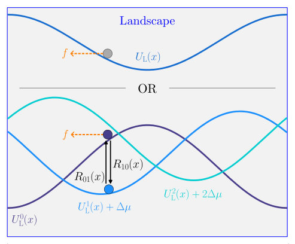
<figcaption class="paper-figure-caption"><b>Fig 1.</b> FIG. 1. Schematic of the simple models for a molecular ma- chine considered in this paper. We model the mechanical state of the molecular machine as a Brownian particle with angle x, which experiences a landscape potential UL(x) (e.g., the blue curves) and a control potential UC[x, λ(t)] (red curve), the latter of which depends on time through the control pa- rameter λ(t) that evolves according to some control protocol Λ. The bead may experience a single constant landscape po- tential, or the potential may switch between a few landscapes according to chemical dynamics whose rates depend on the bead angle. Irrespective of the number of chemical states, we also allow for a constant...</figcaption>
</figure>
<figure class="paper-figure-card">
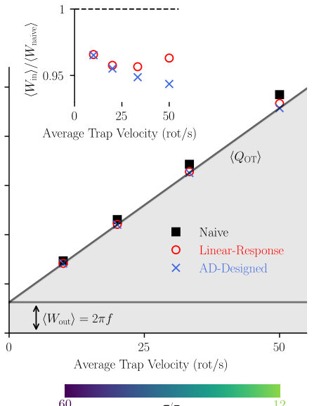
<figcaption class="paper-figure-caption"><b>Fig 2.</b> FIG. 2. Average input work ⟨Win⟩required to drive one ro- tation for the single landscape [Sec. IV A] under the naive protocol (black squares), linear-response protocol (red cir- cles), and automatic-differentiation-designed protocols (blue crosses). The AD-designed protocols approach the optimal- transport limit ⟨Wout⟩+ ⟨QOT⟩(black diagonal line) for all driving speeds we consider here. Horizontal color bar below x-axis indicates corresponding protocol duration τ/τr. In- set: Linear-response and AD-designed protocol works, nor- malized at each driving speed to the naive work. At slow driving speeds, linear response is nearly as efficient as the AD- designed protocol. However, for faster...</figcaption>
</figure>
<figure class="paper-figure-card">
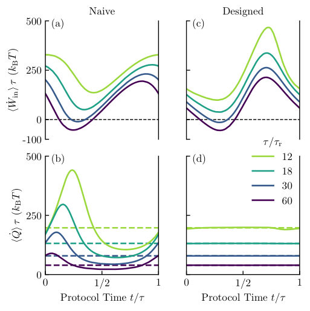
<figcaption class="paper-figure-caption"><b>Fig 3.</b> FIG. 4. Thermodynamic flows for a single landscape as a function of protocol time. (a) Work and (b) total heat rates for the naive protocol. (c) Work and (d) total heat rates for the designed protocols. The designed protocols seek to set the total heat rate equal to the rate ⟨˙QOT⟩predicted under optimal transport [Eq. (40)], shown by the dashed lines in (d). All rates are multiplied by the protocol duration τ so that the integral of each curve (over the dimensionless protocol time on the x-axis) yields the cumulative work or heat over the protocol.</figcaption>
</figure>
<figure class="paper-figure-card">
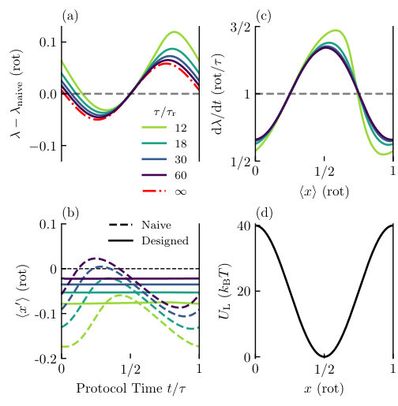
<figcaption class="paper-figure-caption"><b>Fig 4.</b> FIG. 3. Designed protocols for the single landscape at vari- ous protocol durations τ, presented in units of the control- potential relaxation time τr. All protocols pass through λ = 1/2 rot at t/τ = 1/2. (a) Deviation of the designed protocols (solid curves) from the naive, constant-velocity pro- tocol Λnaive (horizontal dashed gray line). The slowest proto- cols approach the linear-response prediction (red dash-dotted curve), while faster protocols are increasingly skewed (time- reversal asymmetric). (b) Mean bead angle in the comoving reference frame ⟨x′⟩(i.e., with the naive trap angle defining x′ = 0), for naive (dashed curves) and designed (solid curves) protocols. The designed...</figcaption>
</figure>
<figure class="paper-figure-card">
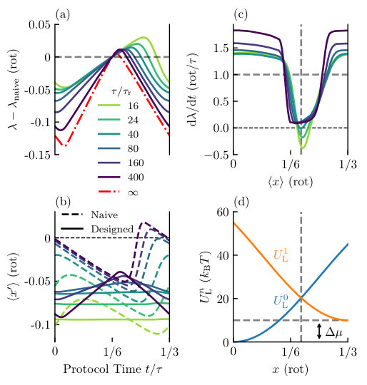
<figcaption class="paper-figure-caption"><b>Fig 5.</b> FIG. 6. Designed protocols for switching landscapes [Sec. IV B] at various protocol durations τ, with time in units of the control-potential relaxation time τr. All protocols pass through λ = 1/6 rot at t/τ = 1/6. (a) Deviation of the designed protocol (solid curves) from the naive, constant- velocity protocol Λnaive (dashed gray line). (b) Mean bead an- gle ⟨x′⟩in the comoving frame of reference (i.e., with the naive trap angle defining x′ = 0), for naive (dashed curves) and de- signed (solid curves) protocols with different durations. The designed protocols rotate the bead mean at a near-constant rate, though there is more variation here than for the sin- gle landscape [Fig. 3(b)]. (c)...</figcaption>
</figure>
</div>

<p><strong>Summary.</strong> This work extends optimal control theory to periodic, non-equilibrium mesoscopic systems, modeling molecular motors using Fokker-Planck dynamics. By employing automatic differentiation, the authors derive design principles showing that efficient operation requires minimizing mechanical heat by maintaining constant distribution rotation. This provides a quantitative tool for understanding energy efficiency in complex biological machines.</p>
<p><strong>Why it may be interesting.</strong> The rigorous application of optimal control theory and automatic differentiation to periodically driven, non-equilibrium stochastic systems provides a powerful computational framework applicable to open quantum systems where dissipation and driving are key.</p>
<details>
<summary>Detailed structure</summary>
<p><strong>Main problem.</strong> Designing efficient, periodic, nonequilibrium control strategies for mesoscopic molecular machines that operate under strong fluctuations.</p>
<p><strong>Main result.</strong> Optimal protocols minimize mechanical waste heat by ensuring the probability distribution rotates at a constant speed without changing its shape, and can reduce chemical heat loss.</p>
<p><strong>Method.</strong> The study employs automatic differentiation applied to Fokker-Planck simulations to calculate gradients for optimizing control potentials $\lambda(t)$ over periodic time cycles.</p>
<p><strong>Model / system.</strong> The model is a rotary molecular motor treated as a Brownian particle diffusing on a periodic angular coordinate, governed by a Langevin equation and analyzed via the Fokker-Planck equation.</p>
<p><strong>Key observables.</strong> Total heat ($\langle Q 
angle = \langle Q_{	ext{mech}} 
angle + \langle Q_{	ext{chem}} 
angle$), output work ($\langle W_{	ext{out}} 
angle$), and the probability distribution $p_t(x)$.</p>
<p><strong>Important parameters / regimes.</strong> The control protocol $\lambda(t)$ is assumed to be time-periodic, and the analysis focuses on the Periodic Steady State (PSS) in the long-time limit.</p>
<p><strong>Assumptions / limitations.</strong> The analysis assumes the control protocol is periodic and that the system can be effectively analyzed in the PSS regime.</p>
<p><strong>Figures summary.</strong> Figure 1 schematically illustrates energy flows and potential structures; Figure 10 compares wasted energy across different control protocols (Fokker-Planck vs. Langevin); Figure 11 compares optimization strategies based on minimizing input work versus mechanical heat.</p>
<p><strong>Paper structure.</strong> The paper establishes the model using Langevin/Fokker-Planck equations, develops the mathematical framework using coordinate transformations and the Floquet ansatz for periodic solutions, and then applies optimal control theory to derive and test design principles for minimizing heat dissipation.</p>
</details>
<details>
<summary>Abstract</summary>
<p>Biological molecular machines are mesoscopic systems that act repeatedly and periodically to perform important cellular tasks while contending with strong fluctuations and operating in an overdamped regime. Optimal control theory is a tool that can be used to understand the design principles behind efficient operation of these machines; however, most studies on optimal control of classical mesoscopic systems have focused on control problems that do not repeat periodically. Here, we automatically differentiate Fokker-Planck simulations to design efficient nonequilibrium control strategies for simple models of periodic molecular machines with and without explicit changes in the machine's chemical state. The designed protocols and theoretical analysis provide insight into the design principles governing efficient driving in these nonequilibrium systems. Designed control protocols should seek to reduce mechanical heat by rotating the entire angular probability distribution at a constant speed without changing its shape, and should reduce chemical heat by reducing the proportion of chemical transitions with large heat.</p>
</details>
<p><sub><a href="#top">↑ back to top</a></sub></p>

<p><a id="paper-2609.03862"></a></p>
<h3 id="equivalence-classes-of-finite-time-transitions-in-optimal-control-and-non-equilibrium-relaxation"><a href="http://arxiv.org/abs/2609.03862v1">Equivalence classes of finite-time transitions in optimal control and non-equilibrium relaxation</a></h3>
<p><strong>Authors:</strong> Jan Meibohm, Samuel Monter, Clemens Bechinger, Sarah A. M. Loos<br>
<strong>Type:</strong> both · <strong>Category:</strong> statistical mechanics · <strong>PDF:</strong> <a href="https://arxiv.org/pdf/2609.03862v1">https://arxiv.org/pdf/2609.03862v1</a><br>
<strong>Analysis basis:</strong> full PDF text, analyzed in chunks
<strong>Topic relevance:</strong> 🔥 <code>non-equilibrium universality</code> <strong>4/5</strong> · <code>driven-dissipative phase transition</code> <strong>3/5</strong> · <code>quantum measurements</code> <strong>2/5</strong> · <code>Keldysh / 2PI / non-Gaussian methods</code> <strong>1/5</strong> · <code>analog quantum simulation</code> <strong>1/5</strong> · <code>correlated / nonlocal dissipation</code> <strong>1/5</strong> · <code>methods for driven-dissipative</code> <strong>1/5</strong></p>
<div class="figure-strip-hint">↔ Scroll figures horizontally</div>
<div class="paper-figures-scroll">
<figure class="paper-figure-card">
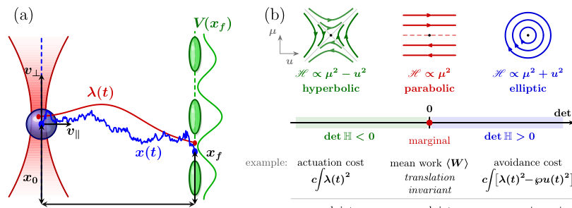
<figcaption class="paper-figure-caption"><b>Fig 1.</b> FIG. 1. (a) Control of a Brownian particle (blue), initially at x0 and moving with constant mean velocity v∥towards an obstacle (green) at distance L = v∥t f . An optical trap (red) with center λ(t) guides the particle’s vertical position x(t) (blue) via v⊥over the duration t f . At the end, the particle must cross the obstacle described by the penalty V(xf ), at the final position xf = x(tf ). (b) The three equivalence classes, distinguished by the sign of detH, i.e., the determinant of the control Hamiltonian (28) [see Sec. III B]. Top: Hamiltonian flow in the (u,µ) plane, with the normal form (55) of the control Hamiltonian H . Bottom: Representative cost functionals for each class, and...</figcaption>
</figure>
<figure class="paper-figure-card">
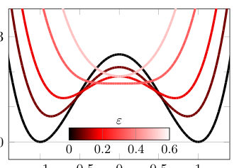
<figcaption class="paper-figure-caption"><b>Fig 2.</b> FIG. 2. Effective obstacle in the presence of noise: Noise-averaged penalty ˜VDW(u) for increasing noise level ε [Eq. (16), color bar]. Thermal averaging progressively smears the double well [Eq. (14)] into a single well.</figcaption>
</figure>
<figure class="paper-figure-card">
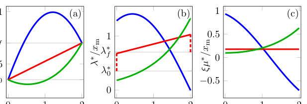
<figcaption class="paper-figure-caption"><b>Fig 3.</b> FIG. 3. Examples of optimal trajectories (u∗,λ ∗,µ∗) for the different equivalence classes, η = sign(ζ) = −1 (hyperbolic class, green), η = 0 (parabolic, red), and η = 1 (elliptic, blue), for identical fixed endpoints u0 = 0.35xm and u f = 0.7xm, as a function of time t for tf = 2τc. (a) Optimal mean particle trajectories u∗(t). (b) Optimal protocols λ ∗(t). The parabolic, mean-work case has jumps at the start and endpoints (dashed lines) for ∆f,0 = 0 in Eq. (26), while the other cases were chosen continuous at the endpoints. (c) Optimal conjugate momenta µ∗(t).</figcaption>
</figure>
<figure class="paper-figure-card">
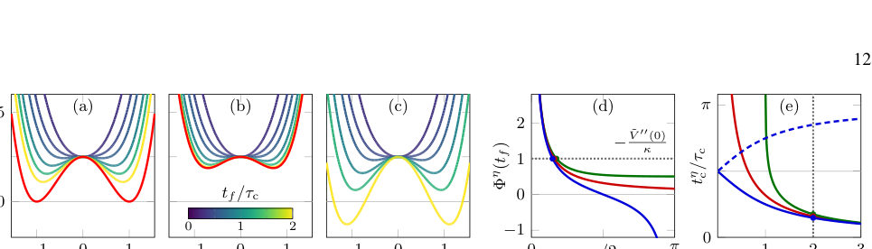
<figcaption class="paper-figure-caption"><b>Fig 4.</b> FIG. 4. Finite-time control transition in the three equivalence classes for ˜V = VDW, ˜V ′′(0) = −κ, and τc = 2τ0. (a)–(c) Cost function at vanishing initial position for the parabolic (a), hyperbolic (b), and elliptic (c) class. The protocol duration tf increases from dark to light [color bar in (b)]. The red lines in (a) and (b) show the cost approached as t f →∞. The elliptic class in (c) possesses no such limit. (d) Cost curvature Φη(t f ) of Eqs. (81) for the hyperbolic (green), parabolic (red), and elliptic (blue) class. The transition occurs where Φη crosses −˜V ′′(0)/κ (dotted line), marked by dots. (e) Critical times (85) as a function of the obstacle strength −˜V ′′(0)τc/(κτ0)....</figcaption>
</figure>
<figure class="paper-figure-card">
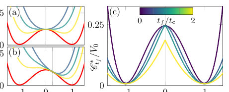
<figcaption class="paper-figure-caption"><b>Fig 5.</b> FIG. 5. Cost landscape of the finite-time control transition in the parabolic class. (a) C 0t f (uf ,0) as function of uf for increasing proto- col duration t f [color bar in (c)] and the bare obstacle VDW (red). (b) Same as (a) but for a non-zero initial position u0 = 0.25xm, breaking the u f →−u f symmetry. (c) Minimized cost C 0,∗ tf (u0) as a function of u0, developing a kink at u0 = 0 for t f &gt; t0c .</figcaption>
</figure>
</div>

<p><strong>Summary.</strong> This work provides a unified theoretical framework for analyzing optimal control of stochastic systems, classifying the resulting problems into three mathematical types. It establishes a deep connection between the minimum cost required for optimal control and the rate function governing non-equilibrium relaxation after a quench. The theory is validated through experiments on colloidal particles, demonstrating access to rare-event physics via controlled trajectories.</p>
<p><strong>Why it may be interesting.</strong> The connection drawn between finite-time dynamical phase transitions (a non-equilibrium concept) and the cost of optimal control provides a powerful, measurable tool to probe rare-event physics in open quantum or mesoscopic systems.</p>
<details>
<summary>Detailed structure</summary>
<p><strong>Main problem.</strong> The paper develops a theory for optimally controlling stochastic systems in structured environments, focusing on identifying and characterizing sharp finite-time transitions.</p>
<p><strong>Main result.</strong> The control problems are classified into three canonical equivalence classes (parabolic, hyperbolic, elliptic), and the optimal control cost is shown to map to the large-deviation rate function governing non-equilibrium relaxation for two of these classes.</p>
<p><strong>Method.</strong> The authors use optimal control theory (Pontryagin's principle) applied to an overdamped Langevin equation, linearizing the dynamics around a fixed point to classify the resulting mathematical structure.</p>
<p><strong>Model / system.</strong> The system is modeled by an overdamped Langevin equation, analyzed in the context of optimal control cost minimization and non-equilibrium relaxation following a potential quench. Experiments are validated using optically trapped colloidal particles.</p>
<p><strong>Key observables.</strong> Optimal protocols, cost functions, critical times ($t_c$), and the large-deviation rate function.</p>
<p><strong>Important parameters / regimes.</strong> Friction coefficient ($\gamma$), trap stiffness ($\kappa$), and the dimensionless noise parameter ($\epsilon$).</p>
<p><strong>Assumptions / limitations.</strong> The analysis relies on linearizing the dynamics around a zero-control fixed point, and the mapping between control cost and rate function fails for the elliptic class.</p>
<p><strong>Figures summary.</strong> Figures illustrate the control transition for mean stochastic work (parabolic class) and the finite-time dynamical phase transitions in free diffusion and harmonic relaxation.</p>
<p><strong>Paper structure.</strong> The paper first establishes the general theory by classifying control problems into three classes based on the control Hamiltonian determinant. It then derives explicit solutions for the optimal protocol and cost for each class, establishing the mapping to non-equilibrium relaxation theory, and finally validates these findings with three distinct experiments on colloidal particles.</p>
</details>
<details>
<summary>Abstract</summary>
<p>We present a theory for the optimal control of stochastic systems in structured environments, represented by penalty terms in the cost functional. We show that such control problems generically feature sharp finite-time transitions associated with a qualitative change in the control strategy at a critical time. Starting from an overdamped Langevin equation and a quadratic cost functional, we show that all resulting problems fall into three canonical equivalence classes (parabolic, hyperbolic, and elliptic), distinguished by the sign of the determinant of the control Hamiltonian. For each class, we obtain the optimal protocol, the cost function, and the critical time in closed form, and show that the transition exhibits features of a continuous phase transition at mean-field level. We then establish a mapping between the optimal control cost and the large-deviation rate function governing non-equilibrium relaxation after a potential quench. The mapping covers the parabolic and hyperbolic classes, while the elliptic class has no simple relaxation counterpart. This correspondence implies that recently discovered finite-time dynamical phase transitions, which are exponentially costly to sample directly, are accessible through ordinary averages over optimally controlled trajectories. To validate our theoretical findings, we report three experiments with optically trapped colloidal particles: a control transition for the mean stochastic work, and the finite-time dynamical phase transitions in free diffusion and in harmonic relaxation.</p>
</details>
<p><sub><a href="#top">↑ back to top</a></sub></p>

<p><a id="paper-2609.03656"></a></p>
<h3 id="finite-temperature-mass-gap-and-quench-dynamics-of-mobile-impurities-in-a-fermi-gas"><a href="http://arxiv.org/abs/2609.03656v1">Finite-temperature mass gap and quench dynamics of mobile impurities in a Fermi gas</a></h3>
<p><strong>Authors:</strong> Baihua Gong<br>
<strong>Type:</strong> theory · <strong>Category:</strong> quantum gases · <strong>PDF:</strong> <a href="https://arxiv.org/pdf/2609.03656v1">https://arxiv.org/pdf/2609.03656v1</a><br>
<strong>Analysis basis:</strong> full PDF text, analyzed in chunks
<strong>Topic relevance:</strong> 🔥 <code>Keldysh / 2PI / non-Gaussian methods</code> <strong>4/5</strong> · <code>non-equilibrium universality</code> <strong>3/5</strong> · <code>analog quantum simulation</code> <strong>2/5</strong> · <code>methods for driven-dissipative</code> <strong>2/5</strong> · <code>quantum measurements</code> <strong>1/5</strong> · <code>scars &amp; prethermalization</code> <strong>1/5</strong></p>
<div class="figure-strip-hint">↔ Scroll figures horizontally</div>
<div class="paper-figures-scroll">
<figure class="paper-figure-card">
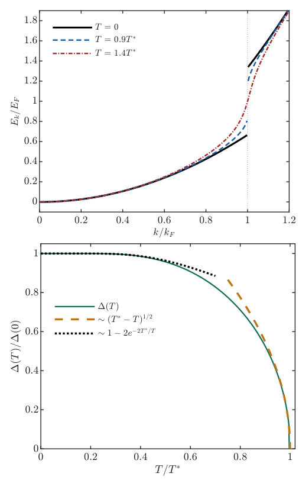
<figcaption class="paper-figure-caption"><b>Fig 1.</b> FIG. 1. (a) Mass-gap dispersion relation Ek/EF as a func- tion of k/kF for M/m = 3. At T = 0 (solid) the disper- sion exhibits a hard gap ∆(0) = k2 F /M at the Fermi mo- mentum; as the temperature increases toward T ∗(dashed) the gap shrinks, and for T &gt; T ∗(dash-dotted) the disper- sion is smooth and the gap has closed. (b) Effective mass gap ∆(T)/∆(0) as a function of T/T ∗, obtained from Eq. (7). The gap equals ∆(0) = k2 F /M at T = 0 and closes at the charac- teristic temperature T ∗= UF /2; the dotted line indicates the low-temperature behavior ∆∼1 −2e−2T ∗/T of Eq. (9); the dashed line indicates the critical behavior ∆∼(T ∗−T)1/2 of Eq. (10).</figcaption>
</figure>
<figure class="paper-figure-card">
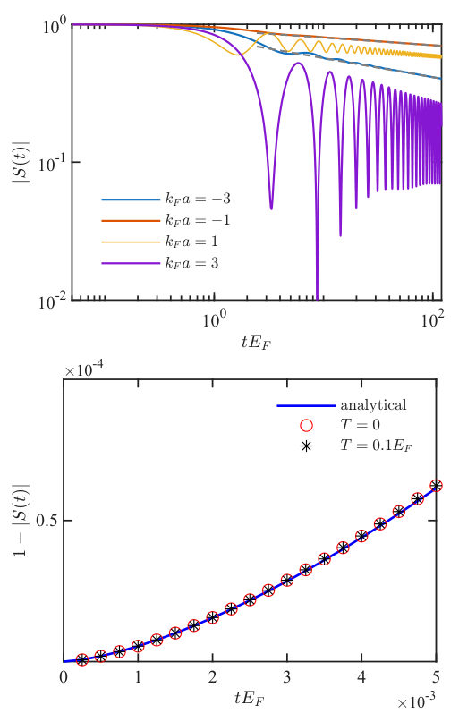
<figcaption class="paper-figure-caption"><b>Fig 2.</b> FIG. 2. Method validation. (a) Infinite-mass benchmark: Ramsey response |S(t)| in the limit M →∞; the overlap de- cays as a power law |S(t)| ∼t−(δF /π)2 and exhibits no finite quasiparticle weight. (b) Short-time behavior of 1 −|S(t)| for kF a = 3 at T = 0 and T = 0.1EF , compared with the uni- versal analytic result 1 −|S(t)| of Ref. [16] (solid line); the collapse of the numerical curves onto the analytic result at both temperatures validates the functional-determinant im- plementation and confirms the temperature independence of the short-time behavior.</figcaption>
</figure>
<figure class="paper-figure-card">
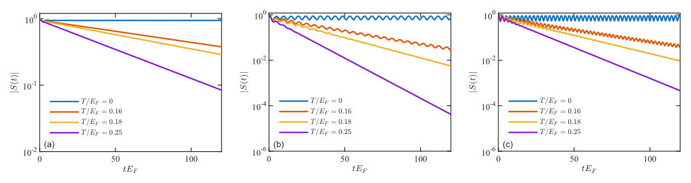
<figcaption class="paper-figure-caption"><b>Fig 3.</b> FIG. 3. Ramsey response |S(t)| for finite mass (M/m = 3) at the three representative interaction strengths (a) kF a = −1 (no bound state),(b) kF a = 20 (polaron) and (c) kF a = 1 (molecule). In each panel the four curves correspond to T/EF = 0, 0.16, 0.18, and 0.25, straddling the characteristic temperature T ∗= EF /6. At T = 0 the overlap saturates at long times to the quasiparticle weight Z, monotonically for kF a = −1 and with oscillations for kF a = 1 and kF a = 20; at finite temperature |S(t)| decays to zero. The long-time oscillations persist for T &lt; T ∗(T/EF = 0.16) but disappear for T &gt; T ∗(T/EF = 0.18, 0.25), where |S(t)| decays monotonically; the disappearance of the oscillations...</figcaption>
</figure>
</div>

<p><strong>Summary.</strong> This theoretical work extends the description of impurities in a Fermi gas to finite temperatures by deriving a self-consistent equation for the effective mass gap $\Delta(T)$. The key finding is that the gap closes at a characteristic temperature $T^*$, signaling the thermal melting of quasiparticles. This thermodynamic crossover is mirrored dynamically by the disappearance of long-time quantum oscillations in the system's Ramsey response above $T^*$.</p>
<p><strong>Why it may be interesting.</strong> The work provides a unified, mean-field framework to connect the thermodynamic signature (gap closing) with the dynamic signature (loss of quantum beats) of quasiparticle thermal melting in a Fermi gas, which is highly relevant for understanding strongly interacting quantum gases.</p>
<details>
<summary>Detailed structure</summary>
<p><strong>Main problem.</strong> The paper generalizes the mass-gap description of mobile impurities in a Fermi gas from zero temperature to finite temperature, and studies the resulting quench dynamics.</p>
<p><strong>Main result.</strong> The effective mass gap closes at a characteristic temperature $T^*$, which is identified as the mean-field signature of the thermal melting of polaron and molecule quasiparticles. Furthermore, long-time quantum beats in the Ramsey response disappear precisely above $T^*$.</p>
<p><strong>Method.</strong> The study combines the Lee–Low–Pines transformation with a self-consistent Hartree–Fock decoupling to derive the finite-temperature gap equation, and uses the functional-determinant approach to compute quench dynamics.</p>
<p><strong>Model / system.</strong> The system consists of a single impurity of mass $M$ interacting via a contact interaction with a noninteracting Fermi sea of host fermions. The model is analyzed using a mean-field Hamiltonian derived from the full interaction.</p>
<p><strong>Key observables.</strong> Effective mass gap $\Delta(T)$, Ramsey response $S(t)$, and the quasiparticle weight $Z$.</p>
<p><strong>Important parameters / regimes.</strong> Characteristic temperature $T^* = U_F / (2k_B)$, Fermi momentum $k_F$, and the impurity mass $M$.</p>
<p><strong>Assumptions / limitations.</strong> The analysis relies on the Hartree–Fock decoupling, which is treated as a Gaussian (quasifree) approximation for the interacting system.</p>
<p><strong>Figures summary.</strong> Figures illustrate the mass-gap dispersion at different temperatures, showing the gap closing at $T^*$, and plot the Ramsey response $|S(t)|$ which exhibits oscillations for $T < T^*$ and decays monotonically for $T > T^*$.</p>
<p><strong>Paper structure.</strong> The paper first establishes the finite-temperature self-consistency equation for the mass gap $\Delta(T)$ and its relation to $T^*$. It then applies the functional-determinant approach to calculate the time evolution of the system overlap, $S(t)$, demonstrating the temperature dependence of the quantum beats.</p>
</details>
<details>
<summary>Abstract</summary>
<p>Recently, a mass-gap description of mobile impurities in a Fermi gas was introduced, which connects Anderson's orthogonality catastrophe for static impurities to the quasiparticle picture of Fermi polarons through a recoil-induced energy gap in the fermionic dispersion. That description, however, was restricted to zero temperature and did not address dynamics. Here we generalize the mass-gap model to finite temperature by combining the Lee--Low--Pines transformation with a self-consistent Hartree--Fock decoupling of the recoil-induced interaction, and we study the quench dynamics within this framework using the functional-determinant approach. At finite temperature the effective mass gap obeys the self-consistency equation $Δ(T)=2U_F\tanh[Δ(T)/4k_B T]$, with $U_F=k_F^2/2M$ and $M$ the impurity mass. This equation admits a nonzero solution below the characteristic temperature $T^*=U_F/(2k_B)$ and closes as $(T^*-T)^{1/2}$. We identify this closing as the mean-field signature of the thermal melting of the polaron and molecule quasiparticles. Computing the Ramsey response $S(t)$ after a sudden quench of the impurity--fermion interaction, we find that its long-time oscillations---quantum beats between the bound and in-gap states---disappear precisely above $T^*$. Our work ties the thermodynamic and dynamical fingerprints of polaron formation to a single temperature-dependent mean-field parameter.</p>
</details>
<p><sub><a href="#top">↑ back to top</a></sub></p>

<p><a id="paper-2609.03910"></a></p>
<h3 id="spin-to-polarization-mapping-with-a-coherent-quantum-dot-cavity-receiver"><a href="http://arxiv.org/abs/2609.03910v1">Spin-to-polarization mapping with a coherent quantum dot-cavity receiver</a></h3>
<p><strong>Authors:</strong> Adrià Medeiros, Vincent Vinel, Eliott Rambeau, Petr Steindl, Elham Mehdi, Manuel Gundín, Clément Millet, Petr Stepanov, Niccolo Somaschi, Aristide Lemaître, Isabelle Sagnes, Olivier Krebs, Pascale Senellart, Dario A. Fioretto, Loïc Lanco<br>
<strong>Type:</strong> experiment · <strong>Category:</strong> quantum information and computing · <strong>PDF:</strong> <a href="https://arxiv.org/pdf/2609.03910v1">https://arxiv.org/pdf/2609.03910v1</a><br>
<strong>Analysis basis:</strong> full PDF text, analyzed in chunks
<strong>Topic relevance:</strong> 🔥 <code>QC/QI experiment</code> <strong>4/5</strong> · <code>quantum optics experiment</code> <strong>3/5</strong> · <code>Tavis-Cummings &amp; cavity-many-emitter</code> <strong>2/5</strong> · <code>quantum measurements</code> <strong>2/5</strong> · <code>analog quantum simulation</code> <strong>1/5</strong> · <code>interference shaping light</code> <strong>1/5</strong></p>
<div class="figure-strip-hint">↔ Scroll figures horizontally</div>
<div class="paper-figures-scroll">
<figure class="paper-figure-card">
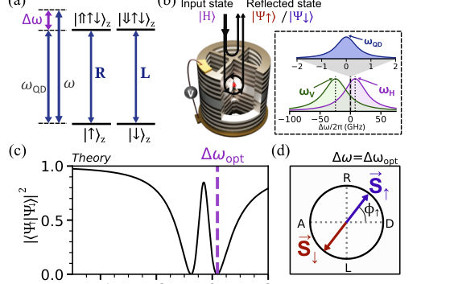
<figcaption class="paper-figure-caption"><b>Fig 1.</b> FIG. 1. (a) Energy levels and optical selection rules of a neg- atively charged QD. The device is optically addressed with an input laser beam of frequency ω, detuned by ∆ω from the QD resonant frequency ωQD. (b) An H-polarized input state is sent to the device. Upon reflection, its polarization is ro- tated in a spin-dependent way, leading to pure spin-dependent polarization states |Ψ↑⟩or |Ψ↓⟩if decoherence is neglected. Inset: Spectral configuration of the QD-cavity system. (c) Theoretically predicted scalar product | ⟨Ψ↑|Ψ↓⟩|2 for the de- vice under study, in the absence of decoherence, as a function of ∆ω. The dashed purple line indicates an optimal detun- ing ∆ωopt where ⟨Ψ↑|Ψ↓⟩= 0....</figcaption>
</figure>
<figure class="paper-figure-card">

<figcaption class="paper-figure-caption"><b>Fig 2.</b> Fig. 1c shows the analytically predicted scalar product |⟨Ψ↑|Ψ↓⟩|2 as a function of the detuning ∆ω for the pa- rameters characterizing this device (see Methods). For large detunings, the light is reflected in the H polariza- tion, since no light is scattered by the QD spin, hence |rH→H| ∼1 and |rH→V | ∼0, leading to | ⟨Ψ↑|Ψ↓⟩|2 ∼1. As the laser is tuned in resonance with the QD, the po- larization is rotated in a spin-dependent way, with V - polarized light now being scattered, leading to an increase of |rH→V |2. In particular, there are two detunings for which |rH→H| = |rH→V | (⟨Ψ↑|Ψ↓⟩= 0, i.e. sHV = 0). This is the condition for an optimal interface, with or- thogonal spin-dependent...</figcaption>
</figure>
<figure class="paper-figure-card">
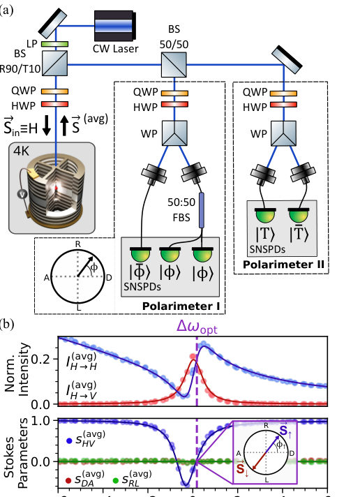
<figcaption class="paper-figure-caption"><b>Fig 3.</b> FIG. 2. (a) Optical setup used to project the spin state. Two polarization analyzers measure the reflected light, in state ⃗S(avg). Polarimeter I measures light in polarization state |ϕ⟩or |¯ϕ⟩, with ⟨ϕ|¯ϕ⟩= 0, where ϕ = 0 corresponds to the D state. A fiber BS splits the light in order to mea- sure the same polarization state |ϕ⟩in two different detectors. Polarimeter II performs the polarization tomography of the reflected light, using three mutually-orthogonal polarization bases T ¯T = HV, DA, RL. BS: Beamsplitter, FBS: Fiber beamsplitter, QWP: Quarter Wave Plate, HWP: Half Wave Plate, LP: Linear Polarizer, WP: Wollaston Prism, SNSPD: Super-conducting Nanowire Single Photon Detectors....</figcaption>
</figure>
<figure class="paper-figure-card">
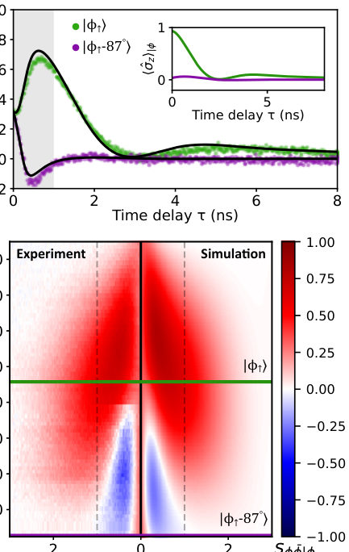
<figcaption class="paper-figure-caption"><b>Fig 4.</b> FIG. 3. (a) Conditional Stokes parameter sϕ ¯ϕ|ϕ(τ) as a func- tion of the delay τ after a photon detection in the measure- ment bases |ϕ↑⟩(green) and |ϕ↑−87°⟩(purple). Experimen- tal data (scatter plot) are compared to numerical simulations of the QD-cavity system. The inset corresponds to the sim- ulated conditional spin component ⟨ˆσz⟩|ϕ (τ) as a function of the delay for each basis. (b) Time-dependent conditional Stokes parameter sϕ ¯ϕ|ϕ(τ) (colorbar) as a function of the mea- surement polarization angle ϕ (vertical axis) and the time de- lay (horizontal axis). Experimental data (Left) are compared with simulations (Right). The horizontal lines correspond to the |ϕ↑⟩(green) and...</figcaption>
</figure>
<figure class="paper-figure-card">
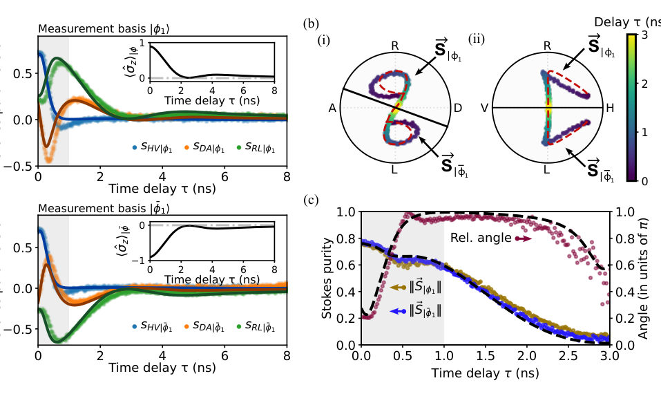
<figcaption class="paper-figure-caption"><b>Fig 5.</b> FIG. 4. (a) Time-dependent conditional Stokes parameters sHV|ϕ1 (blue), sDA|ϕ1 (orange) and sRL|ϕ1 (green) measured after a first detected photon in the measurement bases |ϕ1⟩(Top) and | ¯ϕ1⟩(Bottom), with ϕ1 = ϕ↑−16°. The experimental data (scatter plot) are compared to numerical simulations (solid lines). The inset of each panel shows the predicted evolution of the conditional spin polarization ⟨ˆσz⟩|ϕ. (b) Poincar´e sphere representation of the conditional Stokes vectors ⃗S|ϕ1 and ⃗S| ¯ ϕ1 for the cross-sections (i) DARL and (ii) HVRL as a function of time. Experimental data (scatter plots) are compared to numerical simulations (dashed red lines). (c) Left axis: Polarization state...</figcaption>
</figure>
</div>

<p><strong>Summary.</strong> This experimental work demonstrates a method to deterministically map the spin state of an electron in a quantum dot onto the polarization state of a reflected photon. By leveraging spin-induced Kerr rotation in a QD-cavity system, the authors achieve high-fidelity spin projection and show that the spin relaxation dynamics can be read out via subsequent photon polarization measurements. This paves the way for building quantum logic gates using solid-state emitters.</p>
<p><strong>Why it may be interesting.</strong> This work directly addresses the realization of quantum logic gates by establishing a robust physical mechanism (spin-photon coupling) for deterministic quantum state transfer, which is central to quantum information processing.</p>
<details>
<summary>Detailed structure</summary>
<p><strong>Main problem.</strong> The paper aims to experimentally demonstrate a deterministic, one-to-one mapping (bijection) between the spin state of an embedded electron and the polarization state of a scattered photon.</p>
<p><strong>Main result.</strong> The authors successfully demonstrated this spin-to-polarization mapping using a charged quantum dot-cavity device, showing that two orthogonal polarization states can be generated, each corresponding to a specific spin eigenstate.</p>
<p><strong>Method.</strong> Time-resolved polarization measurements are used to project the electron spin onto its eigenstates and subsequently track spin relaxation dynamics via the detection of a second reflected photon.</p>
<p><strong>Model / system.</strong> The physical system is a negatively-charged InGaAs Quantum Dot embedded in an AlGaAs micropillar cavity. The mechanism relies on the spin-induced Kerr rotation within this QD-cavity structure.</p>
<p><strong>Key observables.</strong> Spin projection fidelity ($95\pm2\%$), the relative angle ($\alpha$) between Stokes vectors ($\vec{S}|\phi_1 \approx -\vec{S}|ar{\phi}_1$), and the conditional Stokes parameter $s_{\phiar{\phi}}^{|\phi
angle}(	au)$.</p>
<p><strong>Important parameters / regimes.</strong> The experiment is limited by the timescale competition between electron spin relaxation ($T_{	ext{spin}}^{-1} \approx 1.9$ ns) and the trion radiative lifetime ($T_{	ext{rad}}^{-1} \approx 200$ ps).</p>
<p><strong>Assumptions / limitations.</strong> The initial model assumes the low-power limit and neglects decoherence for optical transitions or spin states, though the analysis tracks relaxation dynamics.</p>
<p><strong>Figures summary.</strong> Figures illustrate the energy levels and the dependence of the polarization overlap on detuning ($\Delta\omega$), and show the evolution of the conditional Stokes parameter $s_{\phiar{\phi}}^{|\phi
angle}(	au)$ over time delay $  au$.</p>
<p><strong>Paper structure.</strong> The paper develops the theoretical framework for the spin-photon mapping using Kerr rotation, details the measurement protocol involving conditional polarization tomography, presents the quantitative results showing spin projection fidelity, and discusses the limitations imposed by relaxation timescales.</p>
</details>
<details>
<summary>Abstract</summary>
<p>Coherent light-matter interfaces controllably modifying the state of a photon upon interaction with a stationary qubit are a key resource for implementing deterministic entangling gates for optical quantum technologies. This requires a one-to-one mapping between the state of the scattered photon and that of the embedded qubit. Here, we present an experimental signature of such a bijection by leveraging the spin-induced Kerr rotation present in a low-noise charged quantum dot-micropillar cavity device. Through time-resolved polarization measurements, we project the electron spin to one of its eigenstates with $95\pm2\%$ fidelity with a single reflected photon detection, and follow the subsequent spin relaxation through the detection of a second reflected photon. We demonstrate that, after a transient regime governed by the trion radiative lifetime, two orthogonal polarization states can be produced, each associated to a given spin eigenstate. While the current results are limited by a timescale competition between electron spin relaxation and trion radiative lifetime, they could be improved using hole spins displaying increased relaxation times. Our work paves the way towards deterministic logic gates exploiting this one-to-one mapping between a spin and the polarization of a scattered photon.</p>
</details>
<p><sub><a href="#top">↑ back to top</a></sub></p>

<p><a id="paper-2609.03360"></a></p>
<h3 id="nonlinear-dissipation-and-hopf-criticality-in-driven-dissipative-collective-spins"><a href="http://arxiv.org/abs/2609.03360v1">Nonlinear Dissipation and Hopf Criticality in Driven Dissipative Collective Spins</a></h3>
<p><strong>Authors:</strong> Shu Yang, Jun Wang, Weidong Li, Cangtao Zhou, Jian-Song Pan, Jianwen Jie<br>
<strong>Type:</strong> theory · <strong>Category:</strong> other · <strong>PDF:</strong> <a href="https://arxiv.org/pdf/2609.03360v1">https://arxiv.org/pdf/2609.03360v1</a><br>
<strong>Analysis basis:</strong> full PDF text, analyzed in chunks
<strong>Topic relevance:</strong> 🔥 <code>driven-dissipative phase transition</code> <strong>4/5</strong> · <code>methods for driven-dissipative</code> <strong>3/5</strong> · <code>non-equilibrium universality</code> <strong>3/5</strong> · <code>Keldysh / 2PI / non-Gaussian methods</code> <strong>1/5</strong> · <code>correlated / nonlocal dissipation</code> <strong>1/5</strong></p>
<div class="figure-strip-hint">↔ Scroll figures horizontally</div>
<div class="paper-figures-scroll">
<figure class="paper-figure-card">
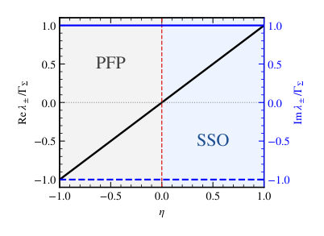
<figcaption class="paper-figure-caption"><b>Fig 1.</b> Figure 1: Eigenvalues in Eq. (21) versus η, shown for ω0/ΓΣ = 1. The black curve and left axis give Re λ±/ΓΣ; the solid and dashed blue curves and right axis give the two signs of Im λ±/ΓΣ. The red dashed line at η = 0 marks the Hopf critical point, given by its intersection with the black curve.</figcaption>
</figure>
<figure class="paper-figure-card">
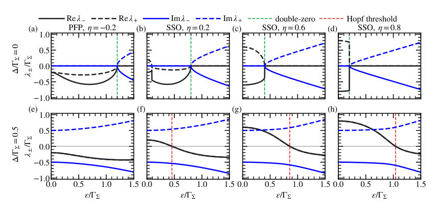
<figcaption class="paper-figure-caption"><b>Fig 2.</b> Figure 2: Eigenvalues for ∆/ΓΣ = 0 and 0.5 (rows) and η = −0.2, 0.2, 0.6, and 0.8 (columns). Black curves show Re λ1,2/ΓΣ, blue curves show Im λ1,2/ΓΣ. The green dashed lines in the resonant row mark the double-zero threshold, while the red dashed lines in the detuned row mark the standard Hopf threshold for ∆, 0 from Eq. (41).</figcaption>
</figure>
<figure class="paper-figure-card">
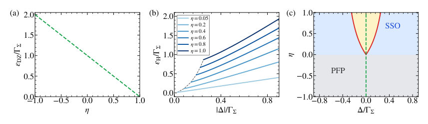
<figcaption class="paper-figure-caption"><b>Fig 3.</b> Figure 3: Threshold structure of the coherent driven system at ΓΣ = 1. Panel (a) shows the resonant double-zero threshold ϵDZ/ΓΣ versus η. Panel (b) shows standard Hopf thresholds for η = 0.05, 0.2, 0.4, 0.6, 0.8, and 1.0. The colored branches in panel (b) are obtained from Eqs. (28), (37), and (38). The dashed guide traces the left endpoints of the corresponding SSO branches. Panel (c) shows the (∆/ΓΣ, η) plane; the green dashed line marks the resonant double-zero locus, while the red solid boundaries mark the finite-detuning Hopf critical lines.</figcaption>
</figure>
<figure class="paper-figure-card">
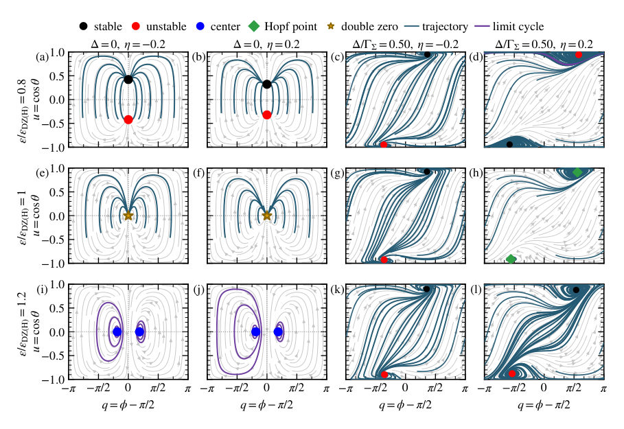
<figcaption class="paper-figure-caption"><b>Fig 4.</b> Figure 4: Phase portraits in (q, u) = (ϕ −π/2, cos θ) for η = −0.2 and 0.2. The left and right two columns show ∆/ΓΣ = 0 and 0.5, respectively. From top to bottom, ϵ/ϵDZ = 0.8, 1.0, 1.2 in the resonant columns and ϵ/ϵ(∆) H = 0.8, 1.0, 1.2 in the finite-detuning columns. Gray streamlines show the global flow field, dark-teal curves highlight representative trajectories from selected initial conditions, and purple curves highlight representative closed periodic orbits: center orbits in the resonant panels and isolated limit cycles in the finite-detuning panels. Filled black, red, and blue circles denote stable fixed points, unstable fixed points, and reversible centers, respectively. Green...</figcaption>
</figure>
<figure class="paper-figure-card">
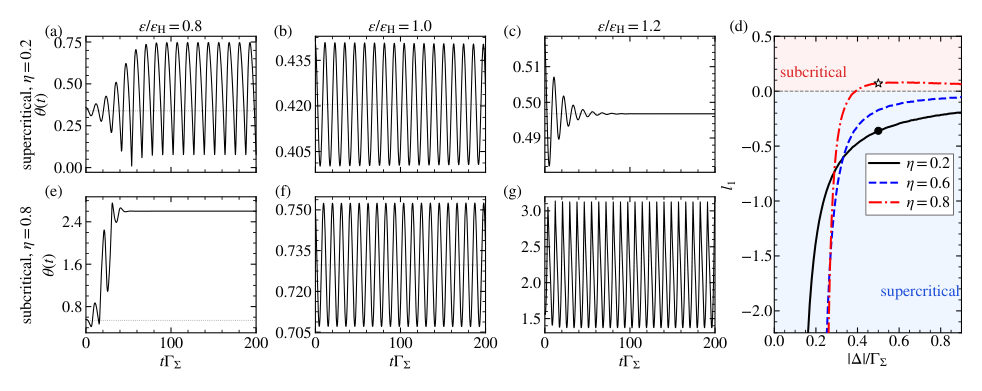
<figcaption class="paper-figure-caption"><b>Fig 5.</b> Figure 5: Detuned SSO dynamics at ∆/ΓΣ = 0.5 and nonlinear classification along the finite-detuning Hopf branches for representative values of η. Panels (a)–(c) show representative time traces θ(t) for η = 0.2, while panels (e)–(g) show the corresponding η = 0.8 traces. In each set, ϵ/ϵH = 0.8, 1.0, and 1.2 from left to right, and the evolution extends to tΓΣ = 200. Panel (d) shows the first Lyapunov coefficient l1 along representative finite-detuning Hopf branches. The lower and upper shaded regions, l1 &lt; 0 and l1 &gt; 0, denote supercritical and subcritical bifurcations, respectively. The filled black circle and open star mark the η = 0.2 and 0.8 cases shown in the time traces. The η = 0.8...</figcaption>
</figure>
</div>

<p><strong>Summary.</strong> This theoretical work establishes a general design principle for understanding self-sustained oscillations in open quantum spin systems. It shows that nonlinear dissipation is crucial for stabilizing the necessary oscillatory background, while the specific symmetry-breaking mechanism determines whether the transition to oscillation is a standard Hopf bifurcation or a different type of singularity.</p>
<p><strong>Why it may be interesting.</strong> This work provides a general design principle for engineering non-equilibrium quantum dynamics, showing precisely how the interplay between background dissipation structure and symmetry-breaking terms dictates the type of emergent collective behavior (e.g., Hopf vs. non-Hopf).</p>
<details>
<summary>Detailed structure</summary>
<p><strong>Main problem.</strong> The paper investigates the fundamental mechanisms governing the emergence of self-sustained oscillations (SSOs) in open, driven-dissipative many-body quantum systems.</p>
<p><strong>Main result.</strong> Nonlinear, U(1)-covariant dissipation is required to stabilize the SSO background via a supercritical Hopf bifurcation, whereas linear dissipation or simple symmetry-breaking channels fail to produce a standard Hopf instability.</p>
<p><strong>Method.</strong> The analysis employs a bifurcation-based picture, linear stability analysis, and local bifurcation theory applied to the mean-field dynamics derived from the Lindblad master equation.</p>
<p><strong>Model / system.</strong> The system is modeled using driven-dissipative collective spins, analyzed in the thermodynamic limit using Bloch-sphere parametrization. The dynamics are governed by a Liouvillian superoperator incorporating both U(1)-covariant background evolution and explicit U(1)-breaking terms.</p>
<p><strong>Key observables.</strong> Hopf frequency ($\omega_H$), Lyapunov coefficients ($l_1$), background attractor type (Polar Fixed Point vs. Self-Sustained Oscillator manifold), and the nature of the bifurcation (supercritical vs. subcritical).</p>
<p><strong>Important parameters / regimes.</strong> Dissipation imbalance ($\eta$), detuning ($\Delta$), and the structure of the U(1)-breaking terms (linear vs. nonlinear).</p>
<p><strong>Assumptions / limitations.</strong> The analysis assumes the existence of a U(1)-covariant background Liouvillian ($L_0$) and relies on mean-field approximations in the thermodynamic limit.</p>
<p><strong>Figures summary.</strong> Figures illustrate the dependence of eigenvalues on dissipation imbalance and detuning, marking Hopf critical points. They also compare time traces and Lyapunov coefficient scans to distinguish between supercritical and subcritical Hopf transitions.</p>
<p><strong>Paper structure.</strong> The paper develops a bifurcation picture by first analyzing the structural requirements for the SSO background using linear and nonlinear dissipation. It then examines the transition dynamics under coherent U(1) breaking, contrasting resonance ($\Delta=0$) with finite detuning ($\Delta 
eq 0$), and finally contrasts these findings with the limitations imposed by simple linear dissipative symmetry-breaking jumps.</p>
</details>
<details>
<summary>Abstract</summary>
<p>Self-sustained oscillations in open many-body systems can be organized by two distinct dynamical ingredients: the selection of a finite-amplitude background attractor and the subsequent control of its neutral phase. We develop this bifurcation-based picture for driven-dissipative collective spins and show how the microscopic dissipative structure determines the available background and its response to explicit U(1) breaking. In the thermodynamic-limit mean-field dynamics, a single linear U(1)-covariant jump produces only polar fixed-point backgrounds, whereas nonlinear covariant dissipation provides amplitude-dependent saturation and stabilizes a finite-latitude self-sustained-oscillator manifold through a supercritical Hopf bifurcation. Under coherent U(1) breaking, exact resonance leads to a reversible double-zero degeneracy with vanishing critical frequency rather than a standard Hopf onset. Finite detuning unfolds this singularity into a genuine finite-frequency Hopf boundary, which exists only on the self- sustained-oscillator side and can be either supercritical or subcritical. By contrast, a single linear dissipative U(1)-breaking jump cannot generate a standard Hopf instability: when its phase-pinning invariant vanishes the azimuthal direction remains neutral, whereas otherwise the phase-locked fixed points have a purely real Jacobian spectrum. These results establish a general design principle: nonlinear covariant dissipation selects the self-sustained background, while the structure of the symmetry-breaking channel determines whether the resulting local response is double-zero, genuinely Hopf, or non-Hopf.</p>
</details>
<p><sub><a href="#top">↑ back to top</a></sub></p>

<p><a id="paper-2609.04171"></a></p>
<h3 id="twin-photon-generation-in-a-silicon-nitride-microresonator"><a href="http://arxiv.org/abs/2609.04171v1">Twin-photon generation in a silicon nitride microresonator</a></h3>
<p><strong>Authors:</strong> Franz Pacher, Haochen Yan, Alekhya Ghosh, Arghadeep Pal, Toby Bi, Hao Zhang, Lixing You, Hao Li, Daniela Salvoni, Shuangyou Zhang, Pascal Del'Haye<br>
<strong>Type:</strong> experiment · <strong>Category:</strong> quantum information and computing · <strong>PDF:</strong> <a href="https://arxiv.org/pdf/2609.04171v1">https://arxiv.org/pdf/2609.04171v1</a><br>
<strong>Analysis basis:</strong> full PDF text, analyzed in chunks
<strong>Topic relevance:</strong> 🔥 <code>quantum optics experiment</code> <strong>4/5</strong> · <code>QC/QI experiment</code> <strong>3/5</strong> · <code>Full counting statistics</code> <strong>2/5</strong> · <code>analog quantum simulation</code> <strong>1/5</strong> · <code>interference shaping light</code> <strong>1/5</strong> · <code>quantum measurements</code> <strong>1/5</strong></p>
<div class="figure-strip-hint">↔ Scroll figures horizontally</div>
<div class="paper-figures-scroll">
<figure class="paper-figure-card">

<figcaption class="paper-figure-caption"><b>Fig 1.</b> FIG. 1. Twin-photon generation in a ring microresonator. (a) Schematic illustration of twin-photon generation through dual-pumped “inverse” four-wave mixing (FWM) in a ring mi- croresonator. (b) Cavity resonance spectrum showing the two pump modes (red and blue) positioned symmetrically about the central signal/idler mode (green), with a separation of one free spectral range (FSR) between each pump and the central mode. (c) Energy-level diagram: absorption of two photons with energies ℏω−1 and ℏω1 generates two degenerate photons with energies ℏω0, satisfying ω−1 + ω1 = 2ω0.</figcaption>
</figure>
<figure class="paper-figure-card">

<figcaption class="paper-figure-caption"><b>Fig 2.</b> FIG. 2. Pump non-degenerate SFWM in a ring microresonator. (a) Experimental setup for twin-photon generation using pump non-degenerate SFWM. ECDL: external cavity diode laser; EDFA: erbium-doped fibre amplifier; PC: polarisation controller; VOA: variable optical attenuator; DWDM: dense wavelength division multiplexer; CDWDM: cascaded dense wavelength division multiplexer; SNSPD: superconducting nanowire single-photon detector; TDC: time-to-digital converter. (b) Alignment of the ring microresonator spectrum with the ITU-T 100 GHz CDWDM channel grid. The measured cavity transmission in TE polarisation (dark trace) exhibits a resonance approximately every one FSR (99.56 GHz), each of which...</figcaption>
</figure>
<figure class="paper-figure-card">

<figcaption class="paper-figure-caption"><b>Fig 3.</b> FIG. 3. Characterisation of the pump-degenerate SFWM-based heralded single-photon source. (a) g(2)-self-correlation measure- ment of the signal mode (Ch 33), with a fit to the data. The self-correlation exhibits a bunching peak with g(2)(0) = 1.67±0.05, corresponding to a Schmidt number of K = 1.49 ± 0.12 (≈1.5 effective modes). (b) Heralded g(2) h (τ) autocorrelation mea- surement, with a fit to the data, showing a pronounced anti-bunching dip with g(2) h (0) = 0.0042 ± 0.0015, well below the single-photon threshold. Error bars are calculated assuming Poissonian statistics of the recorded coincidence counts.</figcaption>
</figure>
<figure class="paper-figure-card">

<figcaption class="paper-figure-caption"><b>Fig 4.</b> FIG. 4. Experimental setups used for the pump-degenerate SFWM heralded photon-source measurements. (a) Setup for the generation of a biphoton state through SFWM in the ring microresonator. (b) Setup for measuring the self-correlation between the split signal mode. (c) Setup for measuring the heralded autocorrelation between a signal and idler pair. (d) Setup for measuring the cross-correlation between a signal and idler mode pair. ECDL: external cavity diode laser; EDFA: erbium-doped fibre amplifier; PC: polarisation controller; VOA: variable optical attenuator; DWDM: dense wavelength division multiplexer; WS: programmable waveshaper; CDWDM: cascaded dense wavelength division multiplexer;...</figcaption>
</figure>
<figure class="paper-figure-card">

<figcaption class="paper-figure-caption"><b>Fig 5.</b> FIG. 5. Characterisation of the ring microresonator device. Cavity resonances aligned with Ch 35 (a), Ch 34 (b), and Ch 33 (c) with loaded quality factors of Q = 140 k, Q = 130 k, and Q = 110 k, respectively. (d) Simulated normalised electric field distribution of the resonator TE00-mode at 1550 nm. (e) Integrated dispersion of the resonator TE00 around 1550 nm, with quadratic polynomial fit to the data. The dispersion is found to be anomalous, with D2/2π = 264 kHz. The location of the Ch 34 resonance, at 1550 nm, is indicated in the zoomed inset.</figcaption>
</figure>
</div>

<p><strong>Summary.</strong> The authors report the first demonstration of frequency-degenerate twin-photon generation and heralded single-photon emission using a single integrated silicon nitride microresonator. By measuring correlation functions like the CAR and $g^{(2)}_h(0)$, they prove the platform's capability to generate tailored quantum light sources on a scalable chip.</p>
<p><strong>Why it may be interesting.</strong> This work is highly relevant as it demonstrates scalable, integrated quantum light sources (twin-photons and single photons) using established silicon photonics platforms, which is a core technology for quantum networking and computation.</p>
<details>
<summary>Detailed structure</summary>
<p><strong>Main problem.</strong> The paper aims to demonstrate frequency-degenerate twin-photon generation and characterize a heralded single-photon source using a single integrated silicon nitride platform.</p>
<p><strong>Main result.</strong> They successfully demonstrated both twin-photon generation (CAR up to 5.4) and heralded single-photon emission ($g^{(2)}_h(0) = 0.0042$) on the same chip.</p>
<p><strong>Method.</strong> The experiments utilized time-correlated single-photon counting with SNSPDs to measure second-order correlation functions ($g^{(2)}$) for both coincidence and heralded measurements.</p>
<p><strong>Model / system.</strong> The physical system is a silicon nitride (Si3N4) microring resonator integrated on a photonic chip. Quantum light generation occurs via Four-Wave Mixing (FWM) processes (both non-degenerate for twins and degenerate for single photons).</p>
<p><strong>Key observables.</strong> Coincidence-to-Accidental Ratio (CAR), heralded anti-bunching ($g^{(2)}_h(0)$), and spectral purity ($P$).</p>
<p><strong>Important parameters / regimes.</strong> Telecom wavelengths, loaded quality factors ($Q \approx 10^5$), and pump powers up to $7 	ext{ dBm}$.</p>
<p><strong>Assumptions / limitations.</strong> The single-photon purity calculation assumes residual deviation is due to incomplete spectral isolation, and quantitative results are derived independently from coincidence counts rather than fitting procedures.</p>
<p><strong>Figures summary.</strong> Figures illustrate the schematic for inverse FWM (twin-photon source), the experimental setup using CDWDM, and plots showing $g^{(2)}$ cross-correlation vs. pump power, confirming the CAR dependence.</p>
<p><strong>Paper structure.</strong> The paper details the realization of two distinct quantum light sources—twin-photon and single-photon—on one platform, characterized by measuring correlation functions ($g^{(2)}$) under different pumping conditions.</p>
</details>
<details>
<summary>Abstract</summary>
<p>Photonic chips with silicon nitride ($\mathrm{Si_3N_4}$) microring resonators are well established as heralded single-photon sources, but their operation as frequency-degenerate twin-photon sources has not previously been demonstrated. Here, we realise a twin-photon source at telecommunication wavelengths in a $\mathrm{Si_3N_4}$ ring microresonator via an inverse four-wave mixing (FWM) process, in which two photons from spectrally distinct pumps are converted into a pair of identical twin photons. The measurements show a maximum coincidence-to-accidental ratio (CAR) of $5.4\pm0.6$. In addition, the microresonator functions as a heralded single-photon source through pump-degenerate spontaneous four-wave mixing (SFWM), exhibiting a spectral purity of $P=0.67\pm0.05$ and a heralded anti-bunching of $g^{(2)}_h(0)=0.0042\pm0.0015$. Together, these results demonstrate both photon-generation schemes on a single integrated $\mathrm{Si_3N_4}$ platform, highlighting its potential for scalable, tailored quantum light generation.</p>
</details>
<p><sub><a href="#top">↑ back to top</a></sub></p>

<p><a id="paper-2609.03542"></a></p>
<h3 id="heralded-one-two-and-three-photon-states-from-waveguided-parametric-down-conversion"><a href="http://arxiv.org/abs/2609.03542v1">Heralded one-, two- and three-photon states from waveguided parametric down-conversion</a></h3>
<p><strong>Authors:</strong> Borrero Landazabal Daniel, Laiho Kaisa<br>
<strong>Type:</strong> experiment · <strong>Category:</strong> other · <strong>PDF:</strong> <a href="https://arxiv.org/pdf/2609.03542v1">https://arxiv.org/pdf/2609.03542v1</a><br>
<strong>Analysis basis:</strong> full PDF text, analyzed in chunks
<strong>Topic relevance:</strong> 🔥 <code>quantum optics experiment</code> <strong>4/5</strong> · <code>Full counting statistics</code> <strong>3/5</strong> · <code>quantum measurements</code> <strong>2/5</strong> · <code>interference shaping light</code> <strong>1/5</strong></p>
<div class="figure-strip-hint">↔ Scroll figures horizontally</div>
<div class="paper-figures-scroll">
<figure class="paper-figure-card">

<figcaption class="paper-figure-caption"><b>Fig 1.</b> FIG. 2. Experimental arrangement for the generation and characterization of heralded states. For Abbreviations see the main text.</figcaption>
</figure>
<figure class="paper-figure-card">

<figcaption class="paper-figure-caption"><b>Fig 2.</b> FIG. 1. Sketches of the array-equivalent forms of the used detection with maximally iy (y = 1, . . . N) bins in idler and sx (x = 1, . . . m) bins in signal. The red detectors represent a detection event, while the gray ones are exposed by optical vacuum. For more details see the main text.</figcaption>
</figure>
<figure class="paper-figure-card">

<figcaption class="paper-figure-caption"><b>Fig 3.</b> FIG. 3. The measured CAR values in terms of the PDC pump power. The red dashed line presents a theoretical fit.</figcaption>
</figure>
<figure class="paper-figure-card">

<figcaption class="paper-figure-caption"><b>Fig 4.</b> FIG. 4. Measured mean photon numbers (symbols) of the heralded states in terms of the CAR. The dashed lines show the theoretical prediction, while the solid lines represent the values for an ideal photon-number states.</figcaption>
</figure>
<figure class="paper-figure-card">

<figcaption class="paper-figure-caption"><b>Fig 5.</b> FIG. 5. Theoretical (red bars) and experimental expectation values of the moment generating function. Experimental re- sults are evaluated at each measured CAR. The theoretical values for ˆ M(η) are calculated with η = ¯µsc = 0.165.</figcaption>
</figure>
</div>

<p><strong>Summary.</strong> The authors report on the generation and characterization of heralded multi-photon states using parametric down-conversion in a waveguide. They introduce and validate a resource-saving analysis method based on single-click probabilities and normalized factorial moments. The key finding is the quantitative demonstration of higher-order non-classicality by violating established classical light criteria.</p>
<p><strong>Why it may be interesting.</strong> This work is highly relevant to quantum optics and open quantum systems, providing robust experimental techniques to verify the non-classical nature of light sources, which is foundational for quantum communication and computation.</p>
<details>
<summary>Detailed structure</summary>
<p><strong>Main problem.</strong> The paper aims to prepare and characterize heralded one-, two-, and three-photon number states using parametric down-conversion while demonstrating resource-saving quantum-optics analysis tools.</p>
<p><strong>Main result.</strong> The measurements successfully characterized higher-order non-classicality by violating the classical condition $g^{(m+1)}_h \geq g^{(m)}_h \geq 1$, confirming the non-classical nature of the generated multi-photon states.</p>
<p><strong>Method.</strong> The analysis utilizes manifold coincidences and singles counting, which is robust against experimental imperfections, to measure normalized factorial moments of photon number ($g^{(m)}_h$).</p>
<p><strong>Model / system.</strong> The experiment uses cross-polarized twin beams generated via parametric down-conversion in a periodically-poled KTiOPO4 (PP-KTP) waveguide operating in the telecommunication wavelength range.</p>
<p><strong>Key observables.</strong> Mean photon number $\langle\hat{n}
angle^{(k)}_s$, normalized factorial moments $g^{(m)}_h(|k
angle)$, Coincidences-to-Accidentals Ratio (CAR), and Klyshko's efficiencies.</p>
<p><strong>Important parameters / regimes.</strong> Pumping powers ranged from $44 \mu	ext{W}$ to $214 \mu	ext{W}$; CAR values were measured between 5.9 and 29.3.</p>
<p><strong>Assumptions / limitations.</strong> The calculation for $g^{(m)}_h$ assumes low detection efficiencies, and the theoretical treatment for $  ext{CAR} &lt; 10$ is limited to single-mode PDC at low gains.</p>
<p><strong>Figures summary.</strong> Figures illustrate the experimental setup, measured CAR vs. pump power, mean photon numbers vs. CAR, and the measured normalized factorial moments and the ratio $G = g^{(2)}_h / g^{(3)}_h$.</p>
<p><strong>Paper structure.</strong> The paper first introduces the resource-saving analysis tools using single-click probability. It then details the measurement of normalized factorial moments up to $m=n+1$ to test the violation of classical light conditions, culminating in quantitative results for multi-photon state characterization.</p>
</details>
<details>
<summary>Abstract</summary>
<p>The manifold coincidences and singles counting provides a resource-saving quantum-optics analysis tool, since it is appropriate even in the presence of heavy experimental imperfections. Here, we prepare cross-polarized twin beams in the telecommunication wavelength range via parametric down-conversion in a periodically-poled KTiOPO$_4$ waveguide and herald photon-number states up to three photons. First, we show that the single-click probability is a versatile tool not only for extracting the state's mean photon number but also for sampling values of the moment generating function being the core behind any quantum optical state. Second, we measure values of the normalized factorial moments of photon number, $g^{(m)}_{\text{h}}$, up to the order $m = n+1$ for the heralded $n$-photon state. These normalized photon correlations provide an expedient method for examining the higher-order non-classicality of light by violating the condition $g^{(m+1)}_{\text{h}} \ge g^{(m)}_{\text{h}} \ge 1$.</p>
</details>
<p><sub><a href="#top">↑ back to top</a></sub></p>

<p><a id="paper-2609.03097"></a></p>
<h3 id="optimal-control-theory-for-measured-quantum-schrodinger-bridges"><a href="http://arxiv.org/abs/2609.03097v1">Optimal control theory for measured quantum Schrödinger bridges</a></h3>
<p><strong>Authors:</strong> Masayuki Ohzeki, Andrew N. Jordan<br>
<strong>Type:</strong> theory · <strong>Category:</strong> statistical mechanics · <strong>PDF:</strong> <a href="https://arxiv.org/pdf/2609.03097v1">https://arxiv.org/pdf/2609.03097v1</a><br>
<strong>Analysis basis:</strong> full PDF text, analyzed in chunks
<strong>Topic relevance:</strong> 🔥 <code>quantum measurements</code> <strong>4/5</strong> · <code>methods for driven-dissipative</code> <strong>2/5</strong> · <code>Keldysh / 2PI / non-Gaussian methods</code> <strong>1/5</strong> · <code>correlated / nonlocal dissipation</code> <strong>1/5</strong> · <code>driven-dissipative phase transition</code> <strong>1/5</strong> · <code>non-equilibrium universality</code> <strong>1/5</strong></p>
<div class="figure-strip-hint">↔ Scroll figures horizontally</div>
<div class="paper-figures-scroll">
<figure class="paper-figure-card">

<figcaption class="paper-figure-caption"><b>Fig 1.</b> FIG. 1. Illustration of the effect-conditioned Doob bridge on the XZ slice of the Bloch ball: Panel (a) The Doob corrected drift D∇log h is plotted as a vector field. The physical drift shows an intuitive mapping of the state space to the terminal collapse state |0⟩⟨0|. Panel (b) is the control vector field fy(q). Panel (c) is the diffusion compensated score for y-control, Cy = ⟨fy(q), D∇log h⟩M = x(z −1).</figcaption>
</figure>
<figure class="paper-figure-card">

<figcaption class="paper-figure-caption"><b>Fig 2.</b> FIG. 2. Illustration of the Gaussian bridge solution for the Sinkhorn bridge with a full terminal distribution. The proba- bility distribution is plotted as a density function of the coor- dinate q and the scaled time τ = t/T. The marginal param- eters are chosen as means of the initial and final marginals, m0 = −1, mT = 1, and covariance parameters s0 = 0.3, sT = 0.1, c ≈0.03, r = 1. The black line indicates the mean path mt.</figcaption>
</figure>
<figure class="paper-figure-card">

<figcaption class="paper-figure-caption"><b>Fig 3.</b> FIG. 3. Numerical two-detector qubit bridge for equal measurement rates. Panel (a) shows sampled states on the x-z Bloch cir- cle: the white circle represents the initial state; green circles represent the controlled bridge at t/T = 1/2; blue circles represent the controlled bridge at t/T = 1; the red diamond represents the target mean. Points are samples and are not connected by trajectory lines. Panel (b) compares the terminal angle distributions relative to the target: gray squares represent the uncon- trolled reference process; blue circles represent the process controlled by the weak-value/Sinkhorn score; red diamonds represent the prescribed target distribution. The prescribed...</figcaption>
</figure>
<figure class="paper-figure-card">

<figcaption class="paper-figure-caption"><b>Fig 4.</b> Figure 3 demonstrates the corresponding bridge-control synthesis. We compute the terminal Sinkhorn scaling for a prescribed target distribution on the circle and simulate the controlled process with drift u+κSy(θ, t). The bridge ensemble is steered to the desired terminal distribution, while the uncontrolled reference ensemble is not. Thus the two-detector model gives a concrete noncommuting- measurement realization of the same statement: the Sinkhorn potential sets the Doob drift of the conditioned diffusion, and its Hamiltonian directional derivative is the imaginary weak value. The L1 distance from the target distribution is reduced from 1.92 for the uncontrolled ref- erence process to...</figcaption>
</figure>
</div>

<p><strong>Summary.</strong> This paper unifies optimal control theory with quantum measurement by showing that the control signal required to steer a quantum state between two distributions is mathematically equivalent to the imaginary part of a generalized weak value. It establishes that weak measurements act as a natural entropic regularization mechanism for quantum state transport, providing a concrete method for quantum feedback control synthesis.</p>
<p><strong>Why it may be interesting.</strong> This work provides a deep, quantitative link between fundamental concepts in quantum measurement theory (weak values) and advanced mathematical tools from optimal control (Schrödinger bridges), offering a powerful new diagnostic tool for open quantum systems.</p>
<details>
<summary>Detailed structure</summary>
<p><strong>Main problem.</strong> To develop a mathematical framework connecting optimal control theory, quantum Schrödinger bridges, and continuous quantum measurement for open quantum systems.</p>
<p><strong>Main result.</strong> The imaginary part of a generalized weak value is shown to be the local control signal, directly corresponding to the directional derivative of the Doob/Sinkhorn bridge potential.</p>
<p><strong>Method.</strong> The authors utilize the mathematical structure of conditional quantum trajectory theory, which induces a Fokker-Planck equation on the quantum state space, and apply optimal transport techniques (Schrödinger bridges).</p>
<p><strong>Model / system.</strong> The system involves continuously monitored quantum systems, modeled by stochastic differential equations (Itô form) on the quantum state manifold. The dynamics are governed by a controllable Hamiltonian $H(u)$.</p>
<p><strong>Key observables.</strong> Weak value ($  ext{Im}\langle A 
angle_{E,
ho}^w$), Control Score ($S_A$), and the Schrödinger/Sinkhorn bridge potentials ($\hat{\varphi}, \varphi$).</p>
<p><strong>Important parameters / regimes.</strong> The control Hamiltonian $H(u) = H_0 + \sum u_\mu A_\mu$, and the terminal measurement effect $E$.</p>
<p><strong>Assumptions / limitations.</strong> The analysis distinguishes its approach from other formulations, such as the Dressel–Jordan formula or the CDJ-Pontryagin framework, focusing on the classical diffusion induced by continuous measurement.</p>
<p><strong>Figures summary.</strong> Figures illustrate the Gaussian bridge solution for state transport and show numerical results for a two-detector qubit, comparing uncontrolled vs. weak-value/Sinkhorn-score-controlled processes.</p>
<p><strong>Paper structure.</strong> The paper progresses by introducing the Hamiltonian flow and boundary conditions, generalizing the classical bridge problem to continuous quantum measurement, and concluding with explicit examples demonstrating the equivalence between weak values and the bridge potential's directional derivative.</p>
</details>
<details>
<summary>Abstract</summary>
<p>Schrödinger bridges and entropic optimal transport are usually formulated as stochastic interpolation problems between initial and final probability distributions. In their computational form, the bridge potentials are obtained by Sinkhorn or iterative proportional fitting, and are often regarded as auxiliary scaling functions. We show that for continuously monitored quantum systems, these potentials acquire a direct measurement-theoretic meaning. The mathematical structure of conditional quantum trajectory theory induces a Fokker--Planck equation on quantum state space. Conditioning this diffusion on a terminal distribution or a terminal measurement effect produces a Doob/Sinkhorn potential whose directional derivative along a unitary control vector field is the imaginary part of a generalized weak value. The same construction connects the Schrödinger-bridge viewpoint to the optimal-path framework for continuously monitored trajectories: the backward bridge potential plays the role of an effect-like costate, and its weak-value directional derivative gives the local control signal. By specifying the desired endpoint distribution, the induced drift produced by the Schrödinger bridge solution is the control solution that minimizes the quadratic cost feedback law, guiding the distribution to its desired endpoint. We quantify the control score of the available control Hamiltonian as a logarithmic directional derivative of the bridge potential, or an imaginary weak value. Three explicit examples identify weak measurement as a natural entropic regularization mechanism for quantum state transport and gives a route from Sinkhorn scaling to quantum feedback and Hamiltonian control synthesis for practical optimal control.</p>
</details>
<p><sub><a href="#top">↑ back to top</a></sub></p>

<p><a id="paper-2609.03045"></a></p>
<h3 id="robust-hamiltonian-engineering-with-subensemble-control"><a href="http://arxiv.org/abs/2609.03045v1">Robust Hamiltonian engineering with subensemble control</a></h3>
<p><strong>Authors:</strong> Wenjie Gong, Matteo Votto, Soonwon Choi<br>
<strong>Type:</strong> theory · <strong>Category:</strong> other · <strong>PDF:</strong> <a href="https://arxiv.org/pdf/2609.03045v1">https://arxiv.org/pdf/2609.03045v1</a><br>
<strong>Analysis basis:</strong> full PDF text, analyzed in chunks
<strong>Topic relevance:</strong> 🔥 <code>analog quantum simulation</code> <strong>4/5</strong> · <code>Rydberg arrays</code> <strong>3/5</strong> · <code>Keldysh / 2PI / non-Gaussian methods</code> <strong>1/5</strong> · <code>methods for driven-dissipative</code> <strong>1/5</strong> · <code>quantum measurements</code> <strong>1/5</strong></p>
<div class="figure-strip-hint">↔ Scroll figures horizontally</div>
<div class="paper-figures-scroll">
<figure class="paper-figure-card">

<figcaption class="paper-figure-caption"><b>Fig 1.</b> FIG. 1. Hamiltonian engineering with subensemble control. (a) We consider interacting spin systems, where one can ap- ply global control pulses to each of n subensembles indepen- dent. As example, n = 3 shown : A (blue), B (yellow) and C (red). We study how to engineer interactions within and between them in this setup. (b) Given a set of native inter- actions, we can determine the feasibility of engineering a tar- get Hamiltonian. Moreover, we provide algorithms to design pulse sequences that optimize the strength of the resultant Hamiltonian.</figcaption>
</figure>
<figure class="paper-figure-card">

<figcaption class="paper-figure-caption"><b>Fig 2.</b> FIG. 3. Two-mode spin squeezing via Hamiltonian engineer- ing. We consider two possible experimental settings: (a-d) an atomic ensemble in an optical cavity and (e,f) dipolar Ry- dberg atoms in optical tweezers. In both cases, the desired target dynamics cannot be generated without subensemble control. (b) Alternating one-axis twisting interactions with the pulse sequence considered results in 2A2S twisting dynam- ics. (c) We study numerically the dynamics of the squeezing parameters ξ±(t) for an ensemble of NA,B = 20 atoms. We assume pulses with A- and F-error strengths ϵ = δ = 0.03, comparing the bare pulse sequence (red lines, triangles for ξ+ and circles for ξ−) in (b) and its robust...</figcaption>
</figure>
</div>

<p><strong>Summary.</strong> This paper develops a robust protocol for engineering desired interactions in multi-subensemble quantum systems, such as atomic arrays. It tackles the theoretical difficulty of Hamiltonian control by providing necessary and sufficient conditions and efficient numerical design strategies. The results demonstrate that these robust sequences can successfully generate quantum states, like spin-squeezed states, even when subjected to realistic experimental control errors.</p>
<p><strong>Why it may be interesting.</strong> This work is highly relevant as it provides concrete, robust protocols for controlling complex many-body interactions in atomic systems, moving beyond idealized theoretical models to address real-world experimental limitations.</p>
<details>
<summary>Detailed structure</summary>
<p><strong>Main problem.</strong> The paper addresses the challenge of robustly engineering target interactions (Hamiltonians) in multi-subensemble quantum systems using global control pulse sequences.</p>
<p><strong>Main result.</strong> They provide a practical toolbox showing that target Hamiltonians can be engineered robustly against common control imperfections (Amplitude, Frequency, Pulse-Width errors) in systems like atomic ensembles.</p>
<p><strong>Method.</strong> The methodology combines theoretical analysis of Hamiltonian engineering (using Floquet-Magnus expansion and completeness conditions) with numerical optimization techniques to design error-mitigating pulse sequences.</p>
<p><strong>Model / system.</strong> The work applies to spin ensembles, modeled using generalized Gell-Mann operators, arising naturally in solid-state defects or multi-species atomic arrays. Specific applications include dual-species atomic ensembles and Rydberg atom arrays.</p>
<p><strong>Key observables.</strong> Two-mode spin squeezing parameter ($\xi$), and the achievable effective Hamiltonian ($   ilde{H}$).</p>
<p><strong>Important parameters / regimes.</strong> Error strengths ($\epsilon, \delta$), number of subensembles ($n$), and the length/design of the pulse sequence (e.g., unitary 4-design).</p>
<p><strong>Assumptions / limitations.</strong> The analysis relies on the completeness of toggling-frame unitaries forming a unitary 4-design to ensure full control over the interaction space.</p>
<p><strong>Figures summary.</strong> Figures illustrate the comparison of spin squeezing achieved using bare vs. robust pulse sequences for both optical cavity and Rydberg atom settings under varying error strengths.</p>
<p><strong>Paper structure.</strong> The paper progresses from establishing the general theory of Hamiltonian engineering and its computational hardness, to deriving necessary and sufficient conditions, and finally demonstrating robust implementation and application in specific atomic platforms.</p>
</details>
<details>
<summary>Abstract</summary>
<p>We present a robust protocol to reshape interactions in a spin ensemble based on global control pulse sequences applied to multiple subensembles in parallel. This setting arises naturally from ensembles of solid-state defects or multi-species atomic arrays. We show that it is provably computationally hard to find pulse sequences that simultaneously engineer interactions both within and between subensembles. Despite its formal hardness, we identify a set of necessary or sufficient conditions under which one can synthesize a target Hamiltonian from the native one. Moreover, we introduce efficient numerical strategies for designing pulse sequences that engineer target Hamiltonians robust against common control imperfections. As a specific application, we discuss the robust generation of two-mode spin squeezing in dual-species atomic ensembles, which is a challenging task without subensemble control. Our results provide a practical toolbox to design novel quantum simulation and sensing experiments with minimal control overhead.</p>
</details>
<p><sub><a href="#top">↑ back to top</a></sub></p>

<p><a id="paper-2609.03854"></a></p>
<h3 id="universal-driven-critical-dynamics-of-entanglement-entropy"><a href="http://arxiv.org/abs/2609.03854v1">Universal Driven Critical Dynamics of Entanglement Entropy</a></h3>
<p><strong>Authors:</strong> Chang-Yu Shen, Shuai Yin, Zi-Xiang Li<br>
<strong>Type:</strong> both · <strong>Category:</strong> statistical mechanics · <strong>PDF:</strong> <a href="https://arxiv.org/pdf/2609.03854v1">https://arxiv.org/pdf/2609.03854v1</a><br>
<strong>Analysis basis:</strong> full PDF text, analyzed in chunks
<strong>Topic relevance:</strong> 🔥 <code>non-equilibrium universality</code> <strong>4/5</strong> · <code>analog quantum simulation</code> <strong>3/5</strong> · <code>methods for driven-dissipative</code> <strong>2/5</strong> · <code>driven-dissipative phase transition</code> <strong>1/5</strong></p>
<div class="figure-strip-hint">↔ Scroll figures horizontally</div>
<div class="paper-figures-scroll">
<figure class="paper-figure-card">

<figcaption class="paper-figure-caption"><b>Fig 1.</b> FIG. 1. (a) Lattices and entanglement-entropy subsystem cuts consid- ered in this Letter. The full system has periodic boundary conditions. On the square lattice, blue Region 𝐴( 𝐿</figcaption>
</figure>
<figure class="paper-figure-card">

<figcaption class="paper-figure-caption"><b>Fig 2.</b> FIG. 2. Driven dynamics of the corner entanglement entropy for the chiral Ising GNY universality class. (a) Corner entanglement entropy Δ𝑆2 as a function of the driving rate 𝑅for the 𝑡-𝑉model on the honeycomb lattice (𝑉𝑐≈1.35). Since 𝑠0 𝑐= 0 in the gapped CDW phase, Δ𝑆2 is independent of the system size 𝐿: the data points at each fixed 𝑅coincide for different 𝐿, without any subtraction, following Δ𝑆2 = −(𝑠QCP 𝑐 /𝑟) ln 𝑅+ const. A linear fit in ln 𝑅then yields 𝑠QCP 𝑐 = 0.168(9). (b) Same analysis as in (a) for the 𝑡-𝑉model on the 𝜋-flux square lattice (𝑉𝑐≈1.30), yielding 𝑠QCP 𝑐 = 0.140(7).</figcaption>
</figure>
<figure class="paper-figure-card">

<figcaption class="paper-figure-caption"><b>Fig 3.</b> FIG. 3. Driven dynamics of the corner entanglement entropy for the chiral Heisenberg GNY universality class. (a) System-size depen- dence of the corner entanglement entropy Δ𝑆2 at several fixed driving rates 𝑅for the Hubbard model on the honeycomb lattice. The data exhibit a logarithmic scaling behavior Δ𝑆2 ∼𝑠0 𝑐ln 𝐿, indicating that, at finite driving rates, the entanglement entropy remains dominated by the corner contribution inherited from the initial AFM ordered phase. Solid lines represent logarithmic fits. (b) Shifted corner entanglement entropy Δ𝑆2 −𝑠0 𝑐ln 𝐿as a function of the driving rate 𝑅for the Hubbard model on the honeycomb lattice, with the initial-state corner coefficient 𝑠0...</figcaption>
</figure>
<figure class="paper-figure-card">

<figcaption class="paper-figure-caption"><b>Fig 4.</b> Fig. 3(a) shows the system-size dependence of the sub- tracted corner entanglement entropy Δ𝑆2 on the honeycomb lattice at several fixed driving rates 𝑅. For 𝐿≥9, the data exhibit a clean logarithmic scaling Δ𝑆2 ∼𝑠0 𝑐ln 𝐿, confirming that at finite driving rates the entanglement entropy remains dominated by the corner contribution inherited from the ini- tial AFM phase. The 𝐿= 6 data deviate slightly from this logarithmic trend due to finite-size effects, as expected for the smallest system size. Fig. 3(b) and Fig. 3(c) present the cen- tral scaling analysis for the honeycomb and 𝜋-flux square lat- tices, respectively. By subtracting the initial-state Goldstone contribution—evaluating Δ𝑆2...</figcaption>
</figure>
</div>

<p><strong>Summary.</strong> This research establishes a universal finite-time scaling theory for quantum entanglement entropy in driven quantum systems. By analyzing the corner entanglement entropy of Dirac fermions, the authors show that the scaling behavior robustly reveals the universal corner coefficient of the underlying critical theory. This extends critical dynamics concepts from local measurements to intrinsic, non-local quantum information measures.</p>
<p><strong>Why it may be interesting.</strong> This work provides a powerful, non-local diagnostic tool—entanglement entropy—to characterize quantum criticality in driven systems, which is highly relevant for understanding non-equilibrium dynamics in quantum simulators.</p>
<details>
<summary>Detailed structure</summary>
<p><strong>Main problem.</strong> The paper aims to extend the predictive power of Kibble-Zurek and finite-time scaling from local observables to non-local quantum information measures, specifically quantum entanglement entropy, in driven critical dynamics.</p>
<p><strong>Main result.</strong> The corner entanglement entropy exhibits a universal finite-time scaling governed by the driving rate, allowing the robust extraction of the underlying conformal field theory's universal corner coefficient far from equilibrium.</p>
<p><strong>Method.</strong> The authors use unbiased Quantum Monte Carlo simulations, employing an incremental algorithm to calculate the corner entanglement entropy ($\Delta S_2$) for various driving rates.</p>
<p><strong>Model / system.</strong> The study investigates interacting Dirac-fermion models, including the Hubbard and spinless t-V models, on honeycomb and pi-flux square lattices, driven across quantum critical points (QCPs).</p>
<p><strong>Key observables.</strong> Corner Entanglement Entropy ($\Delta S_2$), which is used to probe the universal scaling behavior.</p>
<p><strong>Important parameters / regimes.</strong> The driving rate ($R$), system size ($L$), and the characteristic scaling variable ($RLr$).</p>
<p><strong>Assumptions / limitations.</strong> The analysis assumes the system remains within the low-energy scaling window ($a \ll \xi_R \ll L$) for the asymptotic scaling function to hold.</p>
<p><strong>Figures summary.</strong> Figures illustrate the calculation of $\Delta S_2$ via lattice cuts and show data collapse when plotting $\Delta S_2$ against $\ln R$ or $\ln(RLr)$ for different system sizes.</p>
<p><strong>Paper structure.</strong> The paper establishes the theoretical framework connecting FTS to entanglement, applies it to specific fermionic models, details the numerical implementation using incremental algorithms, and finally extracts the universal QCP corner coefficient by analyzing the scaling function's asymptotic behavior.</p>
</details>
<details>
<summary>Abstract</summary>
<p>The Kibble-Zurek mechanism (KZM) and finite-time scaling (FTS) provide a foundational framework for driven critical dynamics, yet their predictive power has been largely confined to local observables. Here, we establish a universal finite-time scaling theory for the nonequilibrium dynamics of quantum entanglement. Using unbiased quantum Monte Carlo simulations, we investigate the corner entanglement entropy of (2+1)-dimensional interacting Dirac fermions driven from ordered phases toward a quantum critical point. We find that the corner entanglement accurately obeys a universal driven scaling governed by the driving rate and system size, persisting whether the initial ordered state is fully gapped or hosts gapless Goldstone modes. Crucially, this dynamical entanglement exhibits a logarithmic dependence on the driving rate, from which the universal corner coefficient of the underlying conformal field theory can be robustly extracted far from equilibrium. These results generalize the KZM from local observables to the intrinsic nonlocal quantum information measures, offering a practical blueprint for characterizing quantum criticality and entanglement on programmable quantum simulators.</p>
</details>
<p><sub><a href="#top">↑ back to top</a></sub></p>

<p><a id="paper-2609.04065"></a></p>
<h3 id="small-quench-loschmidt-dynamics-near-quantum-critical-points"><a href="http://arxiv.org/abs/2609.04065v1">Small-quench Loschmidt dynamics near quantum critical points</a></h3>
<p><strong>Authors:</strong> Kohei Kobayashi<br>
<strong>Type:</strong> theory · <strong>Category:</strong> statistical mechanics · <strong>PDF:</strong> <a href="https://arxiv.org/pdf/2609.04065v1">https://arxiv.org/pdf/2609.04065v1</a><br>
<strong>Analysis basis:</strong> full PDF text, analyzed in chunks
<strong>Topic relevance:</strong> 🔥 <code>non-equilibrium universality</code> <strong>4/5</strong> · <code>analog quantum simulation</code> <strong>2/5</strong> · <code>driven-dissipative phase transition</code> <strong>2/5</strong> · <code>Keldysh / 2PI / non-Gaussian methods</code> <strong>1/5</strong></p>
<div class="figure-strip-hint">↔ Scroll figures horizontally</div>
<div class="paper-figures-scroll">
<figure class="paper-figure-card">

<figcaption class="paper-figure-caption"><b>Fig 1.</b> Low-resolution page preview, page 2</figcaption>
</figure>
<figure class="paper-figure-card">

<figcaption class="paper-figure-caption"><b>Fig 2.</b> Low-resolution page preview, page 3</figcaption>
</figure>
<figure class="paper-figure-card">

<figcaption class="paper-figure-caption"><b>Fig 3.</b> Low-resolution page preview, page 4</figcaption>
</figure>
<figure class="paper-figure-card">

<figcaption class="paper-figure-caption"><b>Fig 4.</b> Low-resolution page preview, page 5</figcaption>
</figure>
<figure class="paper-figure-card">

<figcaption class="paper-figure-caption"><b>Fig 5.</b> Low-resolution page preview, page 6</figcaption>
</figure>
</div>

<p><strong>Summary.</strong> This paper analyzes the initial decay of the Loschmidt echo after a small quench near a quantum critical point. It establishes that the initial decay rate is governed by the variance of the quench operator, which is directly related to static critical correlations. The work provides detailed scaling laws showing how this early-time response depends on the dimensionality and the scaling dimension of the quench operator.</p>
<p><strong>Why it may be interesting.</strong> It provides a rigorous theoretical framework linking the non-equilibrium dynamics (Loschmidt echo) directly to the static properties (critical correlations) of the ground state, which is highly relevant for understanding quantum criticality in many-body systems.</p>
<details>
<summary>Detailed structure</summary>
<p><strong>Main problem.</strong> The paper investigates the initial growth rate of the Loschmidt rate function following a small sudden quench near a quantum critical point (QCP). It aims to connect this early-time dynamic response to static critical correlations.</p>
<p><strong>Main result.</strong> The initial quadratic coefficient of the Loschmidt decay is exactly determined by the spatial sum of the equal-time connected two-point correlation function of the quench operator. The finite-size scaling of this coefficient depends critically on the scaling dimension of the quench operator relative to the system dimension.</p>
<p><strong>Method.</strong> The analysis uses the short-time cumulant expansion of the Loschmidt amplitude, relating the quadratic coefficient to the variance of the quench operator and analyzing the scaling of this variance using critical correlation functions.</p>
<p><strong>Model / system.</strong> The study applies to quantum many-body systems, specifically illustrating results using the transverse-field Ising chain model subjected to small quenches (e.g., changing the transverse or longitudinal field).</p>
<p><strong>Key observables.</strong> Loschmidt rate function $f(t)$, initial quadratic coefficient $\chi_V$, and higher-order cumulants ($\kappa_4$).</p>
<p><strong>Important parameters / regimes.</strong> System size ($L$), quench operator scaling dimension ($\Delta$), and the small quench parameter ($\delta\lambda$ or $\delta h$).</p>
<p><strong>Assumptions / limitations.</strong> The analysis relies on the small-quench approximation and assumes power-law decay for critical correlations, $C(r) \sim |r|^{-2\Delta}$.</p>
<p><strong>Figures summary.</strong> Not specified.</p>
<p><strong>Paper structure.</strong> The paper proceeds by establishing the connection between the short-time Loschmidt dynamics and the variance of the quench operator. It then derives the scaling laws for this variance based on critical exponents and analyzes the crossover behavior by including the fourth cumulant correction.</p>
</details>
<details>
<summary>Abstract</summary>
<p>We study the short-time Loschmidt dynamics after a small sudden quench near a quantum critical point. We show that the initial quadratic growth of the Loschmidt rate function is governed by the variance of the quench operator per system size. For a local quench operator, this variance density is exactly equal to the spatial sum of the equal-time connected two-point correlation function in the initial ground state. This relation connects the early-time Loschmidt response to static critical correlations. Assuming power-law correlations at criticality, we classify the finite-size scaling of the short-time coefficient by the scaling dimension of the quench operator. In one dimension, the coefficient is finite, logarithmically enhanced, or algebraically enhanced with system size. We illustrate this operator dependence in the transverse-field Ising chain, where transverse-field and longitudinal-field quenches couple to different critical operators. We also discuss the first correction beyond the quadratic regime using the fourth cumulant of the post-quench Hamiltonian.</p>
</details>
<p><sub><a href="#top">↑ back to top</a></sub></p>

<p><a id="paper-2609.04150"></a></p>
<h3 id="efficient-conversion-of-optical-to-mechanical-states-close-to-the-single-quantum-level"><a href="http://arxiv.org/abs/2609.04150v1">Efficient Conversion of Optical to Mechanical States Close to the Single-Quantum Level</a></h3>
<p><strong>Authors:</strong> Alexander Rolf Korsch, Liu Chen, Pedro V. Pinho, Boris Müllendorff, Jan N. Kirchhof, Yong Yu, Thiago P. Mayer Alegre, Simon Gröblacher<br>
<strong>Type:</strong> experiment · <strong>Category:</strong> other · <strong>PDF:</strong> <a href="https://arxiv.org/pdf/2609.04150v1">https://arxiv.org/pdf/2609.04150v1</a><br>
<strong>Analysis basis:</strong> full PDF text, analyzed in chunks
<strong>Topic relevance:</strong> 🔥 <code>quantum optics experiment</code> <strong>4/5</strong> · <code>analog quantum simulation</code> <strong>2/5</strong> · <code>driven-dissipative phase transition</code> <strong>1/5</strong> · <code>quantum measurements</code> <strong>1/5</strong></p>
<div class="figure-strip-hint">↔ Scroll figures horizontally</div>
<div class="paper-figures-scroll">
<figure class="paper-figure-card">

<figcaption class="paper-figure-caption"><b>Fig 1.</b> FIG. 1. Photon–phonon conversion via OMIT in op- tomechanical crystals. (a) Schematic illustration of a cav- ity optomechanical system with optical (mechanical) reso- nance frequency ωc (Ωm) and loss rates κ (Γm). The optical loss rate κ is composed of intrinsic cavity losses κi and ex- trinsic cavity coupling κe to an input mode. A strong control beam detuned to the red-optomechanical sideband with laser detuning ∆= ωcon −ωc = −Ωm and laser frequency ωcon drives the optical mode ˆa with an intracavity photon number nc. This driving enables coherent photon–phonon conversion of an optical input signal field at frequency ωsig ≈ωc onto the mechanical oscillator mode ˆb through...</figcaption>
</figure>
<figure class="paper-figure-card">

<figcaption class="paper-figure-caption"><b>Fig 2.</b> FIG. 2. Experimental setup and OMIT window mea- surement. (a) Experimental setup for OMIT measurement. Laser light is split into two optical paths: the control line and the signal line. The signal line pulse is shaped by an amplitude-electro-optic modulator (A-EOM) into an expo- nentially rising pulse with bandwidth Γsig. BS, beam splitter; P-EOM, phase electro-optic modulator; AOM, acousto-optic modulator; SNSPD, superconducting nanowire single photon detector. (b) Measured OMIT window when sweeping the de- tuning between signal light ωsig and cavity resonance ωc. (c) Dependence of the OMIT linewidth Γeff on intracavity photon number nc. The linear fit gives a single photon optomechan-...</figcaption>
</figure>
<figure class="paper-figure-card">

<figcaption class="paper-figure-caption"><b>Fig 3.</b> FIG. 3. Hanbury Brown-Twiss measurement of the mechanical state generated via photon–phonon con- version. (a) Pulse sequence for OMIT conversion and read- out. A strong control pulse of length Tcon = 2.4 µs and in- tracavity photon number nc = 3, 200 (Γeff/2π = 1.9 MHz) enables coherent conversion of an exponentially rising weak coherent input signal with bandwidth Γsig and Tsig = 2.4 µs. After a delay Tstorage = 150 ns, a second short control pulse reconverts part of the mechanical excitation back into opti- cal photons (see Supplementary Information for experimental details). The retrieved optical signal is sent to a Hanbury Brown-Twiss (HBT) setup. (b) Second order autocorrelation...</figcaption>
</figure>
<figure class="paper-figure-card">

<figcaption class="paper-figure-caption"><b>Fig 4.</b> FIG. 4. Calibration of added thermal phonons and their contribution to input-referred noise. (a) Thermal phonon occupancy nth of the mechanical mode as a function of control pulse duration. The black line shows an exponential saturation fit, yielding a turn-on time of 150 ns. Error bars re- flect a dominant 15% systematic uncertainty in the measured detection path efficiency. The gray shaded region indicates the uncertainty in the fitted model. (b) Added input-referred noise versus control pulse duration. The black line represents the total theoretically expected noise. The orange dashed line isolates the contribution from the pulse length dependence of the added thermal noise, while the...</figcaption>
</figure>
<figure class="paper-figure-card">

<figcaption class="paper-figure-caption"><b>Fig 5.</b> FIG. 5. Temporal coherence of the converted me- chanical excitation. (a) Thermal phonon occupancy as a function of time delay between the 300 ns-long pump pulse and the 40 ns-long probe pulse, where the pump pulse is the same configuration as the control pulse used in OMIT photon-phonon conversion measurements. The solid line rep- resents the fit to a phenomenological model discussed in the text nth = noffset −a · e−Tstorage/Trise + b · e−Tstorage/T1 with Trise ≈570 ns and T1 ≈7.3 µs. The probed thermal phonon number contains the instantaneous heating from the weak probe pulse, which is negligible compared to the heating from the pump pulse. (b) Input-referred thermal noise of the OMIT...</figcaption>
</figure>
</div>

<p><strong>Summary.</strong> This paper reports on the efficient, low-noise conversion of quantum optical photons into mechanical phonons using an optomechanical crystal operating at millikelvin temperatures. By utilizing the OMIT mechanism with few-photon inputs, the researchers achieved a high conversion efficiency ($\eta=0.76$) and confirmed the quantum nature of the stored mechanical state. This work advances the field by providing a robust pathway toward deterministic single-quantum mechanical state preparation.</p>
<p><strong>Why it may be interesting.</strong> This work directly addresses the interface between quantum optics and mechanical oscillators, which is a cornerstone of modern AMO physics, particularly in quantum transducers and quantum memory.</p>
<details>
<summary>Detailed structure</summary>
<p><strong>Main problem.</strong> The primary goal is to achieve efficient, low-noise conversion of quantum optical states (photons) into quantum mechanical states (phonons) near the single-quantum level.</p>
<p><strong>Main result.</strong> The authors demonstrated a record-level photon-phonon conversion efficiency of $\eta=0.76$ while maintaining low added thermal noise ($n_{th}=9.0$), establishing the platform for deterministic single-quantum mechanical state preparation.</p>
<p><strong>Method.</strong> The conversion is achieved using Optomechanically Induced Transparency (OMIT) in a cavity optomechanical crystal, probing the system with weak, few-photon coherent optical pulses.</p>
<p><strong>Model / system.</strong> The system utilizes a quasi-two-dimensional optomechanical crystal (OMC) operating at millikelvin temperatures. The interaction is modeled via an effective beam-splitter Hamiltonian, enabling coherent mapping between optical fields and mechanical modes.</p>
<p><strong>Key observables.</strong> Conversion efficiency ($\eta$), mechanical storage lifetime ($T_1$), added thermal noise ($n_{th}$), and the second-order autocorrelation function $g^{(2)}(\Delta n)$ of the retrieved phononic state.</p>
<p><strong>Important parameters / regimes.</strong> Millikelvin temperatures, few-photon input pulses, mechanical frequency ($\Omega_m/2\pi = 10.314$ GHz), and the coupling strength ($g_0/2\pi = 1.0$ MHz).</p>
<p><strong>Assumptions / limitations.</strong> The process relies on operating in the resolved-sideband regime and requires low temperatures to suppress thermal noise, which was a limitation in previous room-temperature efforts.</p>
<p><strong>Figures summary.</strong> Figures illustrate the OMIT mechanism, the experimental setup involving two optical paths, and diagnostic measurements like the HBT autocorrelation function $g^{(2)}(\Delta n)$ to confirm the quantum nature of the converted state.</p>
<p><strong>Paper structure.</strong> The paper details the theoretical framework using OMIT, presents the experimental setup and measurements of the OMIT window, and culminates in demonstrating the high-efficiency, low-noise quantum state transfer from photons to phonons.</p>
</details>
<details>
<summary>Abstract</summary>
<p>Coherent interfaces between optical photons and mechanical excitations provide a promising route towards phonon-state engineering and hybrid quantum information processing. Cavity optomechanical systems enable such interfaces via optomechanically induced transparency (OMIT), allowing coherent mapping between traveling optical fields and localized mechanical modes. However, previous implementations of OMIT conversion protocols were limited to classical input signals with large coherent state photon numbers due to room temperature operation and corresponding thermal mechanical noise. Here, we demonstrate efficient low-noise photon-phonon state transfer close to the single-quantum regime in an optomechanical crystal operated at Millikelvin temperatures. Using weak coherent optical input pulses at the few-photon level, we achieve a record-level photon-phonon conversion efficiency of $η=0.76$, a mechanical storage lifetime of $T_\mathrm{1}=7.3~μs$, and a tunable conversion bandwidth exceeding 4.5 MHz. Hanbury Brown-Twiss measurements of the retrieved signal demonstrate the coherent nature of the converted phononic state, evidencing low added thermal noise in the conversion process ($n_\mathrm{th}=9.0$). These results establish optomechanical crystals as efficient optical interfaces to GHz mechanical modes and provide a pathway toward deterministic single-quantum-level mechanical state preparation.</p>
</details>
<p><sub><a href="#top">↑ back to top</a></sub></p>

<p><a id="paper-2609.03433"></a></p>
<h3 id="universal-scaling-of-fluctuations-and-correlations-across-the-superfluid-transition"><a href="http://arxiv.org/abs/2609.03433v1">Universal scaling of fluctuations and correlations across the superfluid transition</a></h3>
<p><strong>Authors:</strong> Paul Paquiez, Géraud Dupuy, Maxime Allemand, Henri Coquinot, Tommaso Roscilde, Nicolas Dupuis, Adam Rançon, Thomas Chalopin, David Clément<br>
<strong>Type:</strong> experiment · <strong>Category:</strong> statistical mechanics · <strong>PDF:</strong> <a href="https://arxiv.org/pdf/2609.03433v1">https://arxiv.org/pdf/2609.03433v1</a><br>
<strong>Analysis basis:</strong> full PDF text, analyzed in chunks
<strong>Topic relevance:</strong> 🔥 <code>analog quantum simulation</code> <strong>4/5</strong> · <code>non-equilibrium universality</code> <strong>3/5</strong> · <code>Full counting statistics</code> <strong>1/5</strong></p>
<div class="figure-strip-hint">↔ Scroll figures horizontally</div>
<div class="paper-figures-scroll">
<figure class="paper-figure-card">

<figcaption class="paper-figure-caption"><b>Fig 1.</b> FIG. 1. Experimental context. a. Fluctuations and two-point correlations are measured for several configurations (different colors in the left column). Only two scale factors, A and B, are needed to collapse all the measured quantities onto their universal scaling functions (right column). b. Phase diagram of ultracold lattice bosons with harmonic confine- ment. Experimentally, three datasets were acquired (colored arrows), probing the superfluid transition at various entropies. (Inset) Example of a single-shot experimental 3D momentum distribution. The order parameter |ψ| is encoded in the pop- ulation of the k = 0 mode, while two-point correlations are encoded in the spatial structure of...</figcaption>
</figure>
<figure class="paper-figure-card">

<figcaption class="paper-figure-caption"><b>Fig 2.</b> FIG. 2. Universal scaling of the order parameter cumulants. a. The upper panels show the bare cumulants κn measured in the experiment as a function of the interaction strength u for the three different entropies per particle (S0/N ≈0.7kB, S1/N ≈0.9kB, S2/N ≈1.2kB). b. The lower panels show the rescaled cumulants ˜κn (circles: S0/N ≈0.7kB; squares: S1/N ≈0.9kB; pentagons: S2/N ≈1.2kB) as well as the corresponding universal scaling functions (black curves, guide to the eye). The non-universal parameters A, B and uc are determined by collapsing the first 6 cumulants κn of the order parameter distribution measured at different entropies. Errorbars indicate the 68% bootstrap confidence interval...</figcaption>
</figure>
<figure class="paper-figure-card">

<figcaption class="paper-figure-caption"><b>Fig 3.</b> FIG. 3. Universal statistics of the order parameter. a. Power-law scaling of the first cumulant ˜κ1 of the order parameter with the critical exponent β in the ordered phase. The solid black line is a power-law fit yielding β = 0.34(1). b. Power-law scaling of the second cumulant ˜κ2 with the critical exponent γ in the disordered phase. The solid black line is a power-law fit yielding γ = 1.3(2). The data point in light gray are excluded from the fitting range (see SI). c. Probability distribution eP(| ˜ψ|, ζ) of the order parameter in universal units across the critical point. The solid curves are guides to the eye. The markers (circles, squares and pentagons) refer to the entropy of each...</figcaption>
</figure>
<figure class="paper-figure-card">

<figcaption class="paper-figure-caption"><b>Fig 4.</b> FIG. 4. Universal scaling properties of two-point correlations. a. Correlation length ξ as a function of the rescaled distance to the critical point ζ. The observed divergence is compatible with the power-law scaling associated with the critical exponent ν. The fitted value of the latter is ν = 0.65(8), compatible with the 3DXY critical exponent ν3DXY = 0.6718(1) obtained from conformal bootstrap [36]. Inset: same as main panel plotted in linear scale. The markers in light gray correspond to datasets excluded from the power-law fit (see SI). b. Rescaled momentum density distribution ˜n(˜k) as a function of rescaled momentum ˜k. The rescaled quantities are computed from the bare quantities...</figcaption>
</figure>
</div>

<p><strong>Summary.</strong> This work experimentally verifies the concept of two-scale-factor universality near a superfluid phase transition in ultracold lattice Bose gases. By collapsing measurements of order-parameter fluctuations and correlations using two scale factors, the authors confirm that multiple observables obey the same universal scaling laws. This provides strong evidence for the deep underlying principles governing critical behavior in quantum many-body systems.</p>
<p><strong>Why it may be interesting.</strong> It provides a rigorous, quantitative experimental test of fundamental concepts in critical phenomena—specifically, the simultaneous universality of multiple observables—in a highly controllable quantum many-body platform.</p>
<details>
<summary>Detailed structure</summary>
<p><strong>Main problem.</strong> To experimentally validate the prediction of 'two-scale-factor universality' for observables across a continuous phase transition, specifically the superfluid transition.</p>
<p><strong>Main result.</strong> The study demonstrated that fluctuations (cumulants) and two-point correlations simultaneously collapse onto universal scaling functions using only two entropy-dependent scale factors.</p>
<p><strong>Method.</strong> The authors measured order-parameter cumulants and two-point correlations in ultracold lattice Bose gases and collapsed the data using scaling theory concepts.</p>
<p><strong>Model / system.</strong> The system is ultracold lattice Bose gases modeled by the Bose-Hubbard Hamiltonian, studied near the superfluid transition point.</p>
<p><strong>Key observables.</strong> Order-parameter cumulants ($\kappa_n$), order-parameter probability distribution $P(|\psi|)$, and two-point correlation function $G^{(1)}(\mathbf{x}, \mathbf{x}', u)$.</p>
<p><strong>Important parameters / regimes.</strong> The control parameter is $u = U/J$, and the analysis is performed along isentropic trajectories at varying entropies.</p>
<p><strong>Assumptions / limitations.</strong> The results provide an experimental test of universality for a finite-size system, assuming corrections to classical scaling are negligible.</p>
<p><strong>Figures summary.</strong> Figures illustrate the concept of two-scale-factor universality, showing the collapse of bare cumulants onto universal curves using scale factors A and B, and displaying the scaling of the order parameter PDF and correlation length.</p>
<p><strong>Paper structure.</strong> The paper introduces the concept of universal scaling, presents experimental measurements of cumulants and correlations across the superfluid transition, demonstrates the collapse onto universal functions using two scale factors, and finally determines critical exponents ($eta, \gamma, 
u$).</p>
</details>
<details>
<summary>Abstract</summary>
<p>The critical behavior of a system near a continuous phase transition is commonly characterized by power laws and a set of universal critical exponents. Yet universality at phase transitions has even more fundamental manifestations. It dictates that all observables follow universal scaling functions, which may extend beyond simple power laws. Furthermore, microscopic details are captured entirely by only two system-specific scale factors, that rescale any measured quantity onto its universal form. In this work, we report the experimental validation of this prediction in ultracold lattice Bose gases undergoing the superfluid transition. We extract the scale factors by collapsing the order-parameter cumulants measured at varying entropies. We show that these factors specify scaling functions governing both the order-parameter distribution and two-point correlations. By measuring these scaling functions, we also determine three critical exponents $β$, $γ$ and $ν$. Our results provide an experimental demonstration that universal scaling is simultaneously obeyed by multiple observables in a quantum many-body system.</p>
</details>
<p><sub><a href="#top">↑ back to top</a></sub></p>

<p><a id="paper-2609.03737"></a></p>
<h3 id="analog-quantum-simulation-of-bosonic-and-anyonic-models-with-flux-driven-transmons"><a href="http://arxiv.org/abs/2609.03737v1">Analog quantum simulation of bosonic and anyonic models with flux-driven transmons</a></h3>
<p><strong>Authors:</strong> Isak Lyngfelt, Jorge Fernández-Pendás, Göran Johansson, Laura Garciá-Álvarez<br>
<strong>Type:</strong> theory · <strong>Category:</strong> strongly correlated electrons · <strong>PDF:</strong> <a href="https://arxiv.org/pdf/2609.03737v1">https://arxiv.org/pdf/2609.03737v1</a><br>
<strong>Analysis basis:</strong> full PDF text, analyzed in chunks
<strong>Topic relevance:</strong> 🔥 <code>analog quantum simulation</code> <strong>4/5</strong> · <code>QC/QI experiment</code> <strong>2/5</strong> · <code>methods for driven-dissipative</code> <strong>1/5</strong></p>
<div class="figure-strip-hint">↔ Scroll figures horizontally</div>
<div class="paper-figures-scroll">
<figure class="paper-figure-card">

<figcaption class="paper-figure-caption"><b>Fig 1.</b> FIG. 1. Lumped circuit representation of two capacitively coupled flux-tunable transmons. The frequency of the qubit ωi(Φ(t)) depends on the magnetic flux threading the loop of two Josephson junctions, represented by a crossed square.</figcaption>
</figure>
<figure class="paper-figure-card">

<figcaption class="paper-figure-caption"><b>Fig 2.</b> FIG. 3. A Fock-state lattice representation of four sites with two particles. Each vertex is a many-body Fock state, and each edge represents two states being coupled by J(ˆa† i ˆaj + h.c.). The curved arrows indicate the phase of the hopping amplitude, where the blue dashed arrows are the hopping phases for the transmon system in Eq. (16) and the orange solid arrows are for the AH model in Eq. (17). The transmon phases ϕ0 ℓ,ℓ+1 = 0 are not included in the figure. The total phase around any closed loop is the same for both systems when ϕ±1 ℓ,ℓ+1 = ±ℓθ.</figcaption>
</figure>
<figure class="paper-figure-card">

<figcaption class="paper-figure-caption"><b>Fig 3.</b> FIG. 4. A quantum walk of two particles initialized in each of sites one and twelve in a 4 × 3 grid for U = {0, 3J, 10J}. For each interaction strength, the left plot shows the exact dynamics of the BH model, Eq. (2), and the right plot, the simulated transmon system. The system contains four particles, which exceeds the maximum occupation per site, Nmax = 3, so the truncation is not guaranteed by particle-number conservation.</figcaption>
</figure>
<figure class="paper-figure-card">

<figcaption class="paper-figure-caption"><b>Fig 4.</b> FIG. 5. A quantum walk of a triplon initialized at site six in a ten site 1D chain for U = {0, 2J, 4J}. For each interaction strength, the left plot shows the exact dynamics of the BH model, Eq. (2), and the right plot, the simulated transmon system.</figcaption>
</figure>
<figure class="paper-figure-card">

<figcaption class="paper-figure-caption"><b>Fig 5.</b> FIG. 6. A quantum walk for two interacting anyons initialized on the same site for U = 0 and U = 2J in the top and bottom row respectively. For each interaction strength, the left plot shows the exact dynamics of the AH model, Eq. (3), the right plot is the simulated transmon system. We consider the statistical phases θ = π/4, π/2 and 3π/4 for both interaction strengths in the left, middle and right plots respectively. For the non-interacting system, the state delocalizes as the phase increases. For the interacting system, the quantum walk is asymmetric.</figcaption>
</figure>
</div>

<p><strong>Summary.</strong> This paper details a general protocol to simulate interacting bosonic and anyonic lattice models using superconducting transmon arrays. By precisely modulating the transmon frequencies, the authors can engineer the necessary on-site interactions and hopping terms for both the Bose-Hubbard and Anyon-Hubbard models. This work is significant because it demonstrates a scalable, controllable platform for studying strongly correlated quantum matter beyond current simulation limits.</p>
<p><strong>Why it may be interesting.</strong> This work provides a concrete, hardware-agnostic blueprint for simulating fundamental models of strongly correlated matter (like the Hubbard model) using superconducting circuits, bridging theoretical condensed matter physics with quantum hardware realization.</p>
<details>
<summary>Detailed structure</summary>
<p><strong>Main problem.</strong> The paper addresses the challenge of simulating complex many-body phenomena, specifically bosonic and anyonic interactions, which are difficult to model using classical computational methods.</p>
<p><strong>Main result.</strong> The authors propose a general, tunable protocol using superconducting transmon arrays to realize the dynamics of both the Bose-Hubbard and Anyon-Hubbard models.</p>
<p><strong>Method.</strong> The simulation is achieved by resonantly driving the frequencies of capacitively coupled transmons in an alternating pattern, which effectively engineers the required interaction and hopping terms.</p>
<p><strong>Model / system.</strong> The physical platform is a lattice of flux-tunable transmons. The target models are the Bose-Hubbard (BH) model and the Anyon-Hubbard (AH) model, which describe interacting bosons/anyons on a lattice.</p>
<p><strong>Key observables.</strong> Interaction-dependent localization and the statistics-dependent asymmetry of the anyonic quantum walk.</p>
<p><strong>Important parameters / regimes.</strong> On-site interaction strength (U), hopping amplitude (J), and the statistical phase ($   heta$) for anyons.</p>
<p><strong>Assumptions / limitations.</strong> The protocol relies on resonant driving and uses approximations like the Rotating Wave Approximation (RWA) and a first-order Fourier expansion for the time-dependent frequency modulation.</p>
<p><strong>Figures summary.</strong> Figures illustrate the quantum walk dynamics for the BH model across varying interaction strengths and show the total leakage probability in the AH model as a function of interaction strength.</p>
<p><strong>Paper structure.</strong> The paper introduces the problem of simulating interacting quantum systems, details the general protocol using transmon arrays to map the BH and AH Hamiltonians, presents numerical results demonstrating the capability to tune parameters and observe characteristic dynamics, and discusses limitations like leakage.</p>
</details>
<details>
<summary>Abstract</summary>
<p>When quantum particles interact, many-body phenomena that are hard to simulate classically emerge. Quantum analog simulation offers an alternative in which the target system's dynamics is directly realized in controllable quantum hardware. Here, we give a general protocol for simulating the Bose-Hubbard and anyon-Hubbard models using lattices of capacitively coupled flux-tunable transmons. By modulating the transmon frequencies in an alternating pattern, we resonantly drive multiple many-body transitions and can tune the on-site interaction and density-dependent hopping amplitudes for up to three bosons per site, with no additional restriction on the total particle number. By adding phases to the modulation, which renders the transition amplitudes complex-valued, we propose the first simulation protocol for the anyon-Hubbard model with transmons. Numerical simulations of the driven transmon arrays with experimentally realistic parameters reproduce the characteristic dynamics of the target models across a range of interaction strengths and statistical phases, including the interaction-dependent localization and the statistics-dependent asymmetry of the anyonic quantum walk.</p>
</details>
<p><sub><a href="#top">↑ back to top</a></sub></p>
<hr>
<p>
<a href="index.html">← Index</a>
 · <a href="papers_02.html">Next →</a>
</p>
<hr>

</body>
</html>
